| Lv06_0001 |
 |
てきちょく |
少し歩いては止まること。 |
| Lv06_0002 |
 |
いとう |
サケ目サケ科の魚。日本最大級の淡水魚として知られる。 |
| Lv06_0003 |
 |
ちゃー |
想像上のアナグマに似た動物。『故郷』より。 |
| Lv06_0004 |
 |
きささげ |
シソ目ノウゼンカズラ科の落葉高木。『カミナリササゲ』『カワギリ』とも。 |
| Lv06_0005 |
 |
へつほつ |
左右に揺れるさま。多く、船が波に揺れているさまをいう。 |
| Lv06_0006 |
 |
くるりや |
キリまたはヒノキで作った小鏑の先端に、半月形の小雁股をつけた矢。 |
| Lv06_0007 |
 |
ゆう |
古代中国で用いられた、酒を入れる壺。 |
| Lv06_0008 |
 |
ひだり |
正面を南に向けたときの東側にあたる側。また、左手のこと。 |
| Lv06_0009 |
 |
ぬるでのみみふし |
半翅目アブラムシ科の虫。ヌルデに寄生し、虫こぶをつくる。 |
| Lv06_0010 |
 |
しぶき |
ドクダミの古名。 |
| Lv06_0011 |
 |
やなぎ |
キントラノオ目ヤナギ科の樹木の総称。特にシダレヤナギを指す。 |
| Lv06_0012 |
 |
ちょうと |
炊飯の鍋と夜警の銅鑼を兼ねた軍用道具。 |
| Lv06_0013 |
 |
さが |
見つけ出そうとする。 |
| Lv06_0014 |
 |
ようぜん |
ぼんやりするさま。気を失うさま。 |
| Lv06_0015 |
 |
ほきないでん |
安倍晴明が編纂したと伝承される、占いの専門、実用書。 |
| Lv06_0016 |
 |
したが |
後ろについて行く。あとに続く。 |
| Lv06_0017 |
 |
つい |
結局は。最後には。行きつくところは。 |
| Lv06_0018 |
 |
たてい |
がっかりすること。 |
| Lv06_0019 |
 |
りすぞく |
東南アジアに住む少数民族のひとつ。 |
| Lv06_0020 |
 |
あしき |
刑罰として、罪人の足を断ち切る。 |
| Lv06_0021 |
 |
つづし |
少しだけ食事をする。 |
| Lv06_0022 |
 |
さら |
不意をついて奪い去る。 |
| Lv06_0023 |
 |
そううん |
怪しい。また、怪しげな雲。 |
| Lv06_0024 |
 |
いくいく |
草木が茂るさま。また、物事の盛んなさま。 |
| Lv06_0025 |
 |
ばくき |
伝説上の獣の名。人の脳を食うとされる。 |
| Lv06_0026 |
 |
かいち |
牛に似た神獣の名。人の善悪を理解し、悪人を角で突く。 |
| Lv06_0027 |
 |
わか |
生まれてから多くの年数を経ていない。年齢が少ない。 |
| Lv06_0028 |
 |
おごそ |
気持が引き締まるほどおもおもしいさま。 |
| Lv06_0029 |
 |
けいけい |
孤独なさま。一人ぼっち。 |
| Lv06_0030 |
 |
すくもむし |
地中にいる昆虫。主にコガネムシ類の幼虫を指す。 |
| Lv06_0031 |
 |
どうさ |
塩化アンモニウム。 |
| Lv06_0032 |
 |
ちゃくだ |
罪人に首かせをつけて衆人の中に連行し、見せしめの懲罰を加える平安時代の刑法。 |
| Lv06_0033 |
 |
かなふぐし |
鉄製の、土を掘る道具。鉄製のふぐし。 |
| Lv06_0034 |
 |
おおべしみ |
能面の一種で、天狗、鬼畜を表すべしみ。口を一文字に引き結んだ、相貌で大形な面。 |
| Lv06_0035 |
 |
つまこ |
妻子。妻と子。 |
| Lv06_0036 |
 |
じとうばん |
纛幡のひとつ。中古、朝廷で大儀の際に立てる、儀仗のはた。 |
| Lv06_0037 |
 |
きぎゅう |
中国神話における神、動物、人物、妖怪。一本足の龍の姿で表されるとされる。 |
| Lv06_0038 |
 |
たましい |
亡くなった者の霊魂。 |
| Lv06_0039 |
 |
か |
中国古代の礼器のひとつ。酒を温めるために使われた。 |
| Lv06_0040 |
 |
ぬえこどり |
スズメ目ツグミ科の鳥。トラツグミの別名。 |
| Lv06_0041 |
 |
えぶりす |
田植前の田の土をえぶりでならす作業。『荒くろ摺り』とも。 |
| Lv06_0042 |
 |
もっ |
手段、材料を表す語。によって。 |
| Lv06_0043 |
 |
きりこみうるか |
頭と尾鰭を取り去ったアユをたたき、麹とみりんを少し加えて塩漬けにした食品。 |
| Lv06_0044 |
 |
いちびそ |
ブナ目ブナ科の常緑高木。イチイガシの別名。 |
| Lv06_0045 |
 |
ふつのみたま |
日本神話に登場する霊剣。古来、石上神宮の祭神とされている。 |
| Lv06_0046 |
 |
いとう |
便器や、おまるのこと。 |
| Lv06_0047 |
 |
きょうじこじ |
座敷飾りや聞香席で用いる香匙と火箸。また、それを差す小型の瓶。 |
| Lv06_0048 |
 |
うめ |
バラ目バラ科の落葉高木。果実は梅干などに加工して食用とされる。 |
| Lv06_0049 |
 |
にら |
刀に焼き入れをする。 |
| Lv06_0050 |
 |
きばのろ |
ウシ目シカ科の動物。河川や湖沼の周辺、湿地帯などに生息する。 |
| Lv06_0051 |
 |
いずみ |
地中からわき出る水。 |
| Lv06_0052 |
 |
あやま |
あやまちをおかす。また、度をこす。 |
| Lv06_0053 |
 |
むしのたれぎぬ |
笠の周辺に垂らす布。平安時代から鎌倉時代にかけて用いられた。 |
| Lv06_0054 |
 |
たべもの |
ごちそう。食事。 |
| Lv06_0055 |
 |
ほだ |
つなぎとめる。馬の足をつなぐ。 |
| Lv06_0056 |
 |
へっつい |
かまどのこと。 |
| Lv06_0057 |
 |
みのたいらぎ |
ハボウキガイ科ウグイスガイ目の貝。 |
| Lv06_0058 |
 |
くかへ |
大化前代、<探湯|くかたち>に用いた釜。 |
| Lv06_0059 |
 |
ひすか |
心がねじけている。ひねくれている。また、口やかましい。 |
| Lv06_0060 |
 |
のせ |
タカ目タカ科の鳥。ハイタカの別名。 |
| Lv06_0061 |
 |
やしな |
食物などを与えて育てる、または生活させる。 |
| Lv06_0062 |
 |
ぎゅうぎつ |
がやがやと多くの物音がまじるさま。 |
| Lv06_0063 |
 |
にげか |
食物を反芻する。 |
| Lv06_0064 |
 |
きつきつ |
笑う声のこと。 |
| Lv06_0065 |
 |
みだらおのうま |
葦毛のウマ。 |
| Lv06_0066 |
 |
かわら |
膝がしらの部分をおおう皿状の骨。膝のさら。 |
| Lv06_0067 |
 |
すずしろ |
幼児の髪の、頭の上だけを切らずに残したもの。 |
| Lv06_0068 |
 |
ほたきこと |
誇らしく話すこと。高らかに談笑すること。 |
| Lv06_0069 |
 |
みずち |
想像上の動物。竜の子で、角を持つもの。毒気を吐いて人を害すると言い伝えられる。 |
| Lv06_0070 |
 |
かいたい |
疲弊すること。病むこと。 |
| Lv06_0071 |
 |
めなもみ |
キク目キク科の一年草。温帯から亜熱帯に生育する。 |
| Lv06_0072 |
 |
さずき |
材木を綱で結んで仮に作った床または棚。 |
| Lv06_0073 |
 |
めいふしょう |
イカを干したもの。するめ。 |
| Lv06_0074 |
 |
かめのて |
有柄目ミョウガガイ科の動物。エビ、カニなどと同じ甲殻類の一種。 |
| Lv06_0075 |
 |
すがるおとめ |
ジガバチのように腰細でなよやかな美しい少女。 |
| Lv06_0076 |
 |
せんき |
美しい珠で飾った天文観測の器、渾天儀のこと。 |
| Lv06_0077 |
 |
つだみ |
乳児がいったん飲んだ乳をはくこと。乳をあますこと。 |
| Lv06_0078 |
 |
おそば |
普通の歯のうしろやわきに、重なるようにあとからはえる歯。八重歯。 |
| Lv06_0079 |
 |
ゆづかかなぐ |
弓の中央部分に装飾として取り付けた金具。 |
| Lv06_0080 |
 |
いちもんじせせり |
チョウ目セセリチョウ科の昆虫。日本全土に分布する。 |
| Lv06_0081 |
 |
まなかぶら |
目の上下の縁。目のふち。 |
| Lv06_0082 |
 |
あつぶたがい |
中腹足目ヤマタニシ科の貝。 |
| Lv06_0083 |
 |
ぬたはだ |
鹿の角の表面にある波紋。 |
| Lv06_0084 |
 |
しゅだおん |
仏語。見道において三界の見惑を断じて、初めて聖者の類にはいる位。 |
| Lv06_0085 |
 |
すぐ |
人よりも飛び抜けている。ひいでる。まさる。 |
| Lv06_0086 |
 |
やさ |
細やかで柔らかな感じを与える有様である。 |
| Lv06_0087 |
 |
ぎんぎん |
穏やかに議論するさま。和やかなさま。 |
| Lv06_0088 |
 |
きぎんとう |
城の屋根の棟に置く、しゃちほこと同類の魔除けの怪像。 |
| Lv06_0089 |
 |
かいかいほう |
中国元の時代、ペルシア人技術者アラーとイスマーイールが製作した投石機。 |
| Lv06_0090 |
 |
おきの |
代価を借りて、物を買う。掛けで買う。 |
| Lv06_0091 |
 |
あきさ |
先払いで品物を買う。または、売る。手付金を払う。 |
| Lv06_0092 |
 |
だくの |
やや足早に馬を駆けさせること。 |
| Lv06_0093 |
 |
ねら |
的を狙う。機会をうかがう。 |
| Lv06_0094 |
 |
あなひら |
足の甲。足のひら。 |
| Lv06_0095 |
 |
えぐ |
いがらっぽい。のどを刺激するような味がする。 |
| Lv06_0096 |
 |
した |
竹製のざるで酒をこす。 |
| Lv06_0097 |
 |
しぎやまつみ |
木の繁っている山をつかさどる神。『古事記』より。 |
| Lv06_0098 |
 |
しおで |
鞍の前輪と後輪の左右両方にとり付け、むながい、しりがいを結びつける馬具。 |
| Lv06_0099 |
 |
つし |
肌に赤黒い斑点などが出る。黒ずむ。 |
| Lv06_0100 |
 |
えどもとゆい |
日本髪を結うとき根元を束ねるのに使う紐。古く、江戸で作られたところからいう。 |
| Lv06_0101 |
 |
あつえびと |
重病の人。危篤の病にかかっている人。 |
| Lv06_0102 |
 |
こうこう |
心がひろく、ゆったりとしているさま。 |
| Lv06_0103 |
 |
めくばせ |
まばたきして意志を伝えること。目を動かして合図すること。 |
| Lv06_0104 |
 |
こうれんたい |
中国古典詩の詩風の一体。男女の官能的な情愛をうたったもの。 |
| Lv06_0105 |
 |
きょうじょ |
明らかなさま。また、音などがはっきりしているさま。 |
| Lv06_0106 |
 |
こぞ |
残らず集める。また、ことごとく集まる。残らずそろう。 |
| Lv06_0107 |
 |
ぽん |
麻雀で、<刻子|コーツ>を作れる<牌|はい>を<他家|ターチャ>が捨てたとき「ポン」と言ってそれをもらうこと。 |
| Lv06_0108 |
 |
いしばり |
寒さや恐怖などで、身のちぢむような思いをすることのたとえ。 |
| Lv06_0109 |
 |
おそね |
石まじりのやせ地。そね。 |
| Lv06_0110 |
 |
おのころ |
日本神話で、<伊弉諾尊|いざなぎのみこと>と<伊弉冉尊|いざなみのみこと>の二神が、はじめて作ったという島。 |
| Lv06_0111 |
 |
しんにょう |
漢字の部首、<繞|にょう>のひとつ。 |
| Lv06_0112 |
 |
ひすら |
すれて薄くなる。薄れて弱まる。 |
| Lv06_0113 |
 |
おぎろ |
広大である。果てしなく奥深い。 |
| Lv06_0114 |
 |
うぐ |
灸をすえたあとや傷などがただれる。水気をもって腫れる。 |
| Lv06_0115 |
 |
どうがねぶいぶい |
コウチュウ目コガネムシ科の昆虫。農作物などの根を食べる害虫とされている。 |
| Lv06_0116 |
 |
からみわた |
銑鉄から出るからみを、溶解状態のまま高圧蒸気で噴射させて綿状にしたもの。 |
| Lv06_0117 |
 |
けずりぎわ |
中世武士の武芸鍛練法である、<犬追物|いぬおうもの>をする馬場の囲い。 |
| Lv06_0118 |
 |
いっけつ |
音楽の一曲が終わること。また、音曲や遊芸、講談などの一段落。 |
| Lv06_0119 |
 |
あまひき |
日照り続きのとき、雨の降ることを神仏に祈ること。雨乞い。 |
| Lv06_0120 |
 |
したぐら |
鞍橋の下につけ、馬の両脇に当てるための馬具。 |
| Lv06_0121 |
 |
へんばい |
陰陽師が邪気を払い除くため、呪文を唱え大地を踏みしめ、千鳥足に歩む呪法。 |
| Lv06_0122 |
 |
とねりこばのかえで |
ムクロジ目カエデ科の落葉低木。寒冷地の植樹に適しているとされる。 |
| Lv06_0123 |
 |
おお |
数や量がおおい。 |
| Lv06_0124 |
 |
ひよめき |
幼児の頭蓋骨の境目で、骨化がまだ進んでいない結合組織膜の部分。泉門。 |
| Lv06_0125 |
 |
ごんずい |
ナマズ目ゴンズイ科の魚。背びれと胸びれに蛋白質の毒をもっている。 |
| Lv06_0126 |
 |
かたかゆ |
かたく煮た、かゆ。現在の飯にあたる。 |
| Lv06_0127 |
 |
ろんけつ |
罪をさばくこと。裁判。 |
| Lv06_0128 |
 |
ひしこ |
カタクチイワシの別名。『ヒシコイワシ』とも。 |
| Lv06_0129 |
 |
たたず |
たちどまる。一定の場所にしばらくの間じっとしている。 |
| Lv06_0130 |
 |
いもせのおしどり |
歌舞伎、浄瑠璃の外題。 |
| Lv06_0131 |
 |
ひばりげ |
ウマの毛色の名。黄と白のまだらで、たてがみと尾と背の中央部とが黒いもの。 |
| Lv06_0132 |
 |
さしば |
タカ目タカ科の鳥。人里近くに現れ、水田などで狩りをする。 |
| Lv06_0133 |
 |
ばっかつ |
元気なさま。健やかなさま。 |
| Lv06_0134 |
 |
くびち |
獣を捕えるしかけ。くいつ。 |
| Lv06_0135 |
 |
ぽこぺん |
禁止、拒絶することなどの意。いけない。だめ。話にならない。 |
| Lv06_0136 |
 |
こくみ |
こぶ、いぼなど皮膚の一部や筋肉などが病的に盛りあがったもの。 |
| Lv06_0137 |
 |
かんかけいどく |
よるべのない独り者。『<鰥寡孤独|かんかこどく>』とも。 |
| Lv06_0138 |
 |
ひきさらえ |
農具のひとつ。土をかきならすのに用いる。 |
| Lv06_0139 |
 |
かんが |
思いはかる。 |
| Lv06_0140 |
 |
こおり |
固体の状態にある水のこと。 |
| Lv06_0141 |
 |
いすのき |
バラ目マンサク科の常緑高木。本州中部以西の暖地に自生する。 |
| Lv06_0142 |
 |
ひかげ |
日の影。物にさえぎられて日光が当たらない所。 |
| Lv06_0143 |
 |
またぶりづえ |
またに分かれた枝で作った杖。 |
| Lv06_0144 |
 |
なかだな |
和船の船底部を構成する主要外板で、加敷の両側に大きく開いて結合される船底側板。 |
| Lv06_0145 |
 |
こうやまき |
ヒノキ目コウヤマキ科の常緑高木。古墳時代の棺に広く用いられていた。 |
| Lv06_0146 |
 |
からすうり |
ウリ目ウリ科のつる性多年草。林や藪の草木にからみついて成長する。 |
| Lv06_0147 |
 |
ひのためし |
元日の節会に、宮中に氷室の様子を奏し、その年の豊凶を占った儀式。 |
| Lv06_0148 |
 |
まるめいら |
バラ目バラ科の落葉高木または低木。マルメル、マルメロとも。 |
| Lv06_0149 |
 |
およ |
ある所や時、状態などに達する。 |
| Lv06_0150 |
 |
そあいはんのう |
有機化学におけるアルキル化のひとつ。発見者の名から。 |
| Lv06_0151 |
 |
べきかんむり |
漢字の冠のひとつ。わかんむり。 |
| Lv06_0152 |
 |
ゆきのけごろも |
歌舞伎、浄瑠璃の外題。 |
| Lv06_0153 |
 |
わいばく |
中国東北地方の南東部から、朝鮮の北部に住んでいたツングース系民族。 |
| Lv06_0154 |
 |
こうき |
ひろびろとして清らかな大気。転じて、いきいきとした奔放な雰囲気。 |
| Lv06_0155 |
 |
かが |
きらきらと輝くこと。照り輝くさま。 |
| Lv06_0156 |
 |
いくよう |
明らかに輝くさま。 |
| Lv06_0157 |
 |
ゆ |
物を熱湯に入れて煮る。また、患部を湯に浸したり、蒸したりする。 |
| Lv06_0158 |
 |
うい |
物を熱い灰の中に入れて焼く。うずみやきにする。 |
| Lv06_0159 |
 |
いき |
あつくなる。ほてる。むしむしする。 |
| Lv06_0160 |
 |
ひばかり |
トカゲ目ナミヘビ科のヘビ。 |
| Lv06_0161 |
 |
こんでいこま |
<悉達|しった>太子が、出家するため王宮を去るときに乗った白いウマの名。 |
| Lv06_0162 |
 |
えのこしゅう |
江戸初期の俳諧集。一七巻五冊。貞門俳諧の最初の選集として知られる。 |
| Lv06_0163 |
 |
あっとり |
スズメ目アトリ科の小鳥。アトリの別名。 |
| Lv06_0164 |
 |
こいぐち |
刀剣の鞘の口。刃を呑み入れる所。 |
| Lv06_0165 |
 |
もちあわ |
アワの品種。穀粒の粘りけの強いもの。餠、水飴、酒などに用いる。 |
| Lv06_0166 |
 |
おろかおい |
刈ったあと種がこぼれて自然に生えた稲。また、草木の切り株から生えた芽。 |
| Lv06_0167 |
 |
すかり |
鉱脈、岩石などの中にできた空洞。多く、水晶など美しい結晶が成長している。 |
| Lv06_0168 |
 |
ふなどこ |
船中の床に敷くすのこ。転じて、船底の積荷場所。 |
| Lv06_0169 |
 |
つえ |
手に持ち地面について、歩行のたすけとする棒。 |
| Lv06_0170 |
 |
まきはだ |
槇の木の皮を柔らかくしてゆるい縄状にしたもの。 |
| Lv06_0171 |
 |
たかむな |
タケノコの古名。 |
| Lv06_0172 |
 |
そうこう |
山などが、高くけわしいさま。 |
| Lv06_0173 |
 |
ささり |
ハチ目アナバチ科の昆虫。ジガバチの別名。 |
| Lv06_0174 |
 |
きぬたたみ |
絹製の敷き物。太さのそろわない絹の糸で織った敷き物。 |
| Lv06_0175 |
 |
すがぬ |
すがいとで小袖の縫い紋や刺繍模様を入れる縫い方。 |
| Lv06_0176 |
 |
かとり |
かとりで仕立てた衣服。夏のはじめに着る。 |
| Lv06_0177 |
 |
ゆはた |
絞り染め。くくり染め。また、絞り染めにした布や革。 |
| Lv06_0178 |
 |
ほだり |
酒を入れて杯につぐのに用いる、たけの高い銚子。小形の酒樽。 |
| Lv06_0179 |
 |
あわだこ |
膝蓋骨の古称。ひざざら。 |
| Lv06_0180 |
 |
べんかがたま |
昔、中国にあったという名玉。『<和氏璧|かしのたま>』とも。 |
| Lv06_0181 |
 |
ところ |
ヤマノイモ目ヤマノイモ科のつる性多年草。特にオニドコロを指すことがある。 |
| Lv06_0182 |
 |
おなもみ |
キク目キク科の一年草。果実は『ひっつき虫』と呼ばれる。 |
| Lv06_0183 |
 |
ばいまわ |
ばいごまを回して勝負を争う遊び。ばいうち。 |
| Lv06_0184 |
 |
はたはた |
バッタの別名。飛ぶところを表すものとされる。 |
| Lv06_0185 |
 |
どうほえ |
掛物の表装のひとつ。宸翰、古筆、絵画などに用いられる。 |
| Lv06_0186 |
 |
とばりあげ |
即位、朝賀などの大礼のときに、高御座の南面の帳をあげる儀式。 |
| Lv06_0187 |
 |
せっけいかわげら |
カワゲラ目クロカワゲラ科の昆虫。雪の中の藻類や原生動物などを捕食する。 |
| Lv06_0188 |
 |
しょうふく |
勢いや力におそれて屈伏、服従すること。 |
| Lv06_0189 |
 |
いすか |
心がねじけている。かたくなである。みだりがわしい。ひすかし。 |
| Lv06_0190 |
 |
あ |
出会う。あつまる。 |
| Lv06_0191 |
 |
あかみず |
船体の結合部や損傷部などから浸入して船底にたまった水。 |
| Lv06_0192 |
 |
つつ |
外側からおおう。くるむ。 |
| Lv06_0193 |
 |
じっきんろう |
李漁の短編小説集『覚世名言十二楼』の十二編のうちのひとつ。 |
| Lv06_0194 |
 |
わりふ |
木片や竹片などに証拠となる文字などをしるし、それを二つに分割したもの。 |
| Lv06_0195 |
 |
みみぐさり |
耳たぶにつけたり、貫いたりして使う飾り。 |
| Lv06_0196 |
 |
あまどころ |
キジカクシ目キジカクシ科の多年草。 |
| Lv06_0197 |
 |
がざみ |
エビ目ワタリガニ科のカニ。遊泳脚をもち、海中をすばやく泳げる。 |
| Lv06_0198 |
 |
いしずえ |
建造物の柱、壁などの下に土台となる石をすえること。また、その石。 |
| Lv06_0199 |
 |
さいなん |
こまかくやわらかなこと。また、そのもの。 |
| Lv06_0200 |
 |
かかばじごく |
八寒地獄のひとつ。寒さのあまり舌がもつれ「ははば」という声しか出ないとされる。 |
| Lv06_0201 |
 |
あくた |
人の腹の中に寄生する虫。腹の虫。回虫。 |
| Lv06_0202 |
 |
こおろぎ |
バッタ目コオロギ上科の昆虫の総称。秋に、鈴を転がすような鋭い声で鳴く。 |
| Lv06_0203 |
 |
わくも |
ダニ目ワクモ科の虫。ニワトリ、ハトなどに外部寄生し、夜間に吸血して衰弱させる。 |
| Lv06_0204 |
 |
あぶらこばえ |
ハエ目アブラコバエ科の昆虫の総称。 |
| Lv06_0205 |
 |
あまりょう |
中国における想像上の動物。雨を起こすといわれる。 |
| Lv06_0206 |
 |
いぐるみ |
狩猟用具の一種。矢に糸や網をつけ射放ち、鳥や魚にからませて捕える。 |
| Lv06_0207 |
 |
けきぜん |
ばりばりという音がするさま。 |
| Lv06_0208 |
 |
きょうさん |
巻物または書物の紙挟みで、検出用や読みかけのしるしとして用いる道具。 |
| Lv06_0209 |
 |
ひらいごめ |
早稲のまだ実りきらない穂を刈り取り、炒ってから臼に入れて搗いてつくったもの。 |
| Lv06_0210 |
 |
はえづ |
米俵や材木などの形を整えて、積み上げること。 |
| Lv06_0211 |
 |
としよ |
年を取った人。老人。 |
| Lv06_0212 |
 |
にきみばな |
にきびのように、赤くぶつぶつとした鼻。ざくろばな。 |
| Lv06_0213 |
 |
わささ |
醸造したまま、まだ火入れをしていない新酒。まだ、<漉|こ>してない酒。 |
| Lv06_0214 |
 |
かやくき |
スズメ目イワヒバリ科の小鳥。カヤクグリの別名。 |
| Lv06_0215 |
 |
はくけい |
しずか。やすらか。無為であるさま。 |
| Lv06_0216 |
 |
いつ |
数の名。四つの次、六つの前の自然数。昔の時刻で、今の午前か午後八時ころ。 |
| Lv06_0217 |
 |
よ |
ふまえる。もとづく。由来する。 |
| Lv06_0218 |
 |
おくぶか |
表から遠い。また、奥まで続いている。 |
| Lv06_0219 |
 |
なまず |
ナマズ目ナマズ科の魚。大きな口と長いヒゲをもつ。 |
| Lv06_0220 |
 |
とも |
おなじく。共同して。一緒に。 |
| Lv06_0221 |
 |
まじ |
人と触れ合う。また、もてなす。 |
| Lv06_0222 |
 |
いっきゃく |
ひとたび笑うこと。軽く笑うこと。 |
| Lv06_0223 |
 |
いもせのまつ |
歌舞伎、浄瑠璃の外題。 |
| Lv06_0224 |
 |
おおよめ |
兄の妻。あによめ。 |
| Lv06_0225 |
 |
ぎょ |
中国古代の木製楽器のひとつ。木製で、伏した虎を模し、背に二十七の刻みがある。 |
| Lv06_0226 |
 |
ほうどう |
婦人の肥えているさま。 |
| Lv06_0227 |
 |
かが |
男女が集まって、歌舞、飲食などをする。 |
| Lv06_0228 |
 |
はくやく |
流星。流れ星。 |
| Lv06_0229 |
 |
ほこ |
自慢する。手柄をひけらかす。 |
| Lv06_0230 |
 |
しこう |
ラックカイガラムシの分泌物からとれた染料のこと。 |
| Lv06_0231 |
 |
ちょうせんにんじん |
セリ目ウコギ科の多年草。生薬として古くから利用されてきた。 |
| Lv06_0232 |
 |
そだ |
生長する。大きくなる。 |
| Lv06_0233 |
 |
にっきぎ |
古代の日時計のひとつ。台の上に棒をたて、棒が台に落とす影の方向で時間をはかる。 |
| Lv06_0234 |
 |
びび |
うまず休まず努め励むさま。また、長々と細かく説き続けるさま。 |
| Lv06_0235 |
 |
さと |
かしこい。賢明である。 |
| Lv06_0236 |
 |
つばく |
突出する。凹凸がある。 |
| Lv06_0237 |
 |
あいのうしょう |
室町中期の百科事典。事物の起源、和漢の故事、漢字の語源などを解説している。 |
| Lv06_0238 |
 |
えごのき |
ツツジ目エゴノキ科の落葉小高木。将棋のこまや和傘の材料として利用される。 |
| Lv06_0239 |
 |
ほけつち |
ねばりけがなく、草木の生育に適さない土。 |
| Lv06_0240 |
 |
ぐろ |
物を積み重ねた所。 |
| Lv06_0241 |
 |
や |
焼き払う。燃やす。燃える。 |
| Lv06_0242 |
 |
けいきん |
中国の古楽器。弦が一本で、竹でこすって演奏する。 |
| Lv06_0243 |
 |
ひなつぼし |
火星の和名。『<熒惑星|けいこくせい>』とも。 |
| Lv06_0244 |
 |
ふか |
裾や袖口で、裏布を表に折り返し縁のように仕立てた部分を出す。 |
| Lv06_0245 |
 |
くらおかみ |
タカオカミと共に雨を司る神。 |
| Lv06_0246 |
 |
はじし |
歯の根もとの肉。 |
| Lv06_0247 |
 |
こいあし |
足の膝から下が腫れる病。脚気の類。 |
| Lv06_0248 |
 |
もごよ |
うねりながら行く。身をくねらせ動き行く。 |
| Lv06_0249 |
 |
こうがい |
つゆ。また、夜間の冷たい大気。 |
| Lv06_0250 |
 |
よはず |
矢筈の一種。矢竹の上端の部分をえぐって、そのまま筈としたもの。 |
| Lv06_0251 |
 |
へいさらばさら |
馬または牛、羊、鹿などの腹中から出る石。獣類の腸内に生じる結石。 |
| Lv06_0252 |
 |
かたきらうわ |
鹿児島県奄美大島に伝わるブタの妖怪。 |
| Lv06_0253 |
 |
もしな |
台湾各地に伝わる妖怪、未確認生物。全身は毛が包まれることが多いとされる。 |
| Lv06_0254 |
 |
おしまずき |
脇息。つくえ。また、牛車の前後の口の下に渡した仕切り。 |
| Lv06_0255 |
 |
のりご |
仰せられる。のたまう。 |
| Lv06_0256 |
 |
とどもじ |
オイラト語の表記のために、モンゴル文字を改良して作られた文字。 |
| Lv06_0257 |
 |
えいたく |
詩文の添削を請うときに使うことば。郢正。 |
| Lv06_0258 |
 |
すもり |
孵化しないで巣の中に残っている卵。また、あとに取り残されること。 |
| Lv06_0259 |
 |
そうけ |
竹製の皿。竹を編んで作ったざる。 |
| Lv06_0260 |
 |
ね |
列を作ってゆっくりと進む。 |
| Lv06_0261 |
 |
ざっとう |
さわがしくこみあうこと。また、人混み。 |
| Lv06_0262 |
 |
せいけんろく |
江戸後期の漢詩文集。学問論、時局論、五七条、詩歌などを収める付録とから成る。 |
| Lv06_0263 |
 |
やりがんな |
木材の表面を削り仕上げる工具。 |
| Lv06_0264 |
 |
らば |
奇蹄目ウマ科の動物。雄のロバと雌のウマの交雑種。 |
| Lv06_0265 |
 |
はったい |
大麦を炒って焦がし、ひいて粉にしたもの。干菓子の材料とする。 |
| Lv06_0266 |
 |
こうこ |
いかにも好ましいこと。ちょうどよいこと。 |
| Lv06_0267 |
 |
ござ |
『ある』の丁寧語。あります。ございます。 |
| Lv06_0268 |
 |
けいがしら |
漢字の部首、<頭|かしら>のひとつ。 |
| Lv06_0269 |
 |
しゅしょ |
秦書八体のひとつ。ほこなどの兵器に用いた字体であるとされる。 |
| Lv06_0270 |
 |
と |
動かないようにする。引き止める。 |
| Lv06_0271 |
 |
ゆが |
あくを抜くために、熱湯をくぐらせる。また、さっとゆでる。 |
| Lv06_0272 |
 |
さんさく |
水の落ちる音のたとえ。また、魚などが浮き沈みするさま。 |
| Lv06_0273 |
 |
あぐ |
釣り針の先端近くの内側を向いた小さな鉤。かかった魚を逃がさないための部分。 |
| Lv06_0274 |
 |
せいわく |
青い土のこと。 |
| Lv06_0275 |
 |
いだ |
抱きかかえる。しっかりとかかえるように持つ。 |
| Lv06_0276 |
 |
よ |
かしこい。すぐれている。 |
| Lv06_0277 |
 |
くちひび |
唇にできるひび。また、吹き出物。 |
| Lv06_0278 |
 |
おめあし |
膝から下が腫れる足の病。 |
| Lv06_0279 |
 |
ちちほむ |
皮膚にできる風疹のような小さな瘡。 |
| Lv06_0280 |
 |
ひろ |
空間や面積、範囲などが大きい。 |
| Lv06_0281 |
 |
へご |
ヘゴ目ヘゴ科の常緑性シダ植物。湿度の高い林中などに生息する。 |
| Lv06_0282 |
 |
けんこう |
武器をしまいこんで再び用いないこと。転じて、世が治まること。 |
| Lv06_0283 |
 |
いまし |
注意する。 |
| Lv06_0284 |
 |
かてい |
豚のこと。 |
| Lv06_0285 |
 |
たーる |
粘り気のある黒から褐色の油状の液体。タバコの煙に含まれる。 |
| Lv06_0286 |
 |
かいき |
つぶすこと。壊毀。 |
| Lv06_0287 |
 |
かいく |
わらじのこと。 |
| Lv06_0288 |
 |
はいもとおろ |
はいまわっている。のびて絡みついている。 |
| Lv06_0289 |
 |
いいとよ |
フクロウ目フクロウ科の鳥。フクロウの古名。 |
| Lv06_0290 |
 |
たくけん |
清めること。 |
| Lv06_0291 |
 |
よがなよっぴて |
夜どおし。一晩中。 |
| Lv06_0292 |
 |
いぶせ |
気分が晴れず、うっとうしい。気づまりである。 |
| Lv06_0293 |
 |
いちぐら |
古代、市場で売買や交換のため商品を並べて置いた所。 |
| Lv06_0294 |
 |
かんかんのう |
江戸時代、長崎から流行した中国風の踊り。『<看看踊|かんかんおどり>』とも。 |
| Lv06_0295 |
 |
がんかりがね |
狂言。各流。摂津の百姓と和泉の百姓が、上頭に年貢の初雁をささげる。 |
| Lv06_0296 |
 |
うわなり |
歌舞伎、浄瑠璃の外題。 |
| Lv06_0297 |
 |
くんげき |
衣装の裾と、はきもの。徒行者の衣服。 |
| Lv06_0298 |
 |
しるまし |
奇怪な徴候。不吉な前兆。 |
| Lv06_0299 |
 |
ちがい |
貝類で、浮遊性幼生の時期をおえ、岩石や砂泥などに定着しはじめて、まもないもの。 |
| Lv06_0300 |
 |
ねり |
からすきの部分の名。車の前に水平に出たながえ状のもの。『<耒轅|とりくび>』とも。 |
| Lv06_0301 |
 |
てっこうろく |
中国、明初の漆工芸の専門書。中国漆工芸の代表的な著書とされる。 |
| Lv06_0302 |
 |
しねいと |
布の末端にできる織り余りの糸。はたじね。 |
| Lv06_0303 |
 |
じゅうてい |
穂状花序の一型。花軸に柄のない単性花が密について垂れ下がるもの。 |
| Lv06_0304 |
 |
しゅさ |
鼻部の皮膚が赤みがかり、毛穴の部分に発疹ができ、こぶのようにはれあがる鼻。 |
| Lv06_0305 |
 |
はふ |
鳥が勢いよく飛びあがる。とびかける。 |
| Lv06_0306 |
 |
ししむし |
死災の前兆を示す、不吉とされる虫の名。『日本霊異記』より。 |
| Lv06_0307 |
 |
けんぎょう |
物事を点検し、誤りをただすこと。 |
| Lv06_0308 |
 |
はなかけ |
はなきりの刑によって処刑されること。また、鼻が欠け落ちること。 |
| Lv06_0309 |
 |
のいぬ |
イヌが野生化したもの。 |
| Lv06_0310 |
 |
はみかえ |
病気が再発する。ぶりかえす。はみかえる。 |
| Lv06_0311 |
 |
りょうてん |
消滅すること。 |
| Lv06_0312 |
 |
りょうりょう |
こえること。 |
| Lv06_0313 |
 |
めいばく |
くらくて遠いこと。また、幽玄であること。特に、死後の世界をいう。 |
| Lv06_0314 |
 |
きゅうそう |
玉や金属が触れあって美しく鳴り響くさま。 |
| Lv06_0315 |
 |
ろーむ |
砂、シルト、粘土をほぼ等量に含んだ土壌。 |
| Lv06_0316 |
 |
かんせいのあ |
世の中のことを知らず、狭い見識や考え方にとらわれていることのたとえ。 |
| Lv06_0317 |
 |
ぜんばつこうち |
どうすることもできない窮地に追い込まれることのたとえ。 |
| Lv06_0318 |
 |
ぼうれいしき |
好き勝手に振る舞い、乱暴で残忍な様子。 |
| Lv06_0319 |
 |
りょうけつ |
脂と血。 |
| Lv06_0320 |
 |
うびたい |
額の上に白い斑文のあるウマ。 |
| Lv06_0321 |
 |
しえん |
広いことと狭いこと。広さと狭さ。 |
| Lv06_0322 |
 |
しし |
豚の切り身。 |
| Lv06_0323 |
 |
しきゅう |
身を安んずること。 |
| Lv06_0324 |
 |
しごう |
神に供える穀類の美称。 |
| Lv06_0325 |
 |
たいしゅ |
ほこのこと。 |
| Lv06_0326 |
 |
ていあい |
靴底の釘のこと。『<釘鞋|ていあい>』とも。 |
| Lv06_0327 |
 |
ていとう |
虹の異称。 |
| Lv06_0328 |
 |
うるお |
潤うようにする。湿りを与える。 |
| Lv06_0329 |
 |
ふ |
夜遅くまで起きている。夜ふかしをする。 |
| Lv06_0330 |
 |
おそ |
危険を感じて不安になる。恐怖心を抱く。 |
| Lv06_0331 |
 |
うしな |
なくす。なくなる。 |
| Lv06_0332 |
 |
たから |
貴重で価値のあるもの。大切なもの。 |
| Lv06_0333 |
 |
み |
注意してしっかりと目でとらえる。 |
| Lv06_0334 |
 |
はかりごと |
くわだて。計画。計略。 |
| Lv06_0335 |
 |
ひじり |
知徳のすぐれた人。 |
| Lv06_0336 |
 |
ないがま |
物をなぎ切るための鎌。『<薙鎌|なぎがま>』が変化した語。 |
| Lv06_0337 |
 |
たぐい |
仲間。同類。ともがら。 |
| Lv06_0338 |
 |
わざわ |
火事や洪水、地震などのよくない出来事。 |
| Lv06_0339 |
 |
ごと |
比喩的に、同等や類似の意を表す語。 |
| Lv06_0340 |
 |
あつ |
物の一方から反対側までの隔たりが大きい。あつみがある。 |
| Lv06_0341 |
 |
したが |
つきしたがう。従いまもる。 |
| Lv06_0342 |
 |
おさ |
一つにまとまる。すべる。 |
| Lv06_0343 |
 |
おーすとりあ |
中央ヨーロッパに位置する連邦共和制国家。首都はウィーン。 |
| Lv06_0344 |
 |
にゅーはんぷしゃー |
アメリカ合衆国北東部、ニューイングランド地方に位置する州。 |
| Lv06_0345 |
 |
うぇすとみんすたー |
ロンドンのセントラル・ロンドンにある地区。観光スポットとして知られる。 |
| Lv06_0346 |
 |
せんとじょーじず |
カリブ海のグレナダの首都。また、セント・ジョージ教区の中心地。 |
| Lv06_0347 |
 |
べおぐらーど |
セルビア共和国の首都。ヨーロッパ最古の都市のひとつ。 |
| Lv06_0348 |
 |
じょーじあ |
南コーカサスにある共和制国家。首都はトビリシ。 |
| Lv06_0349 |
 |
えすふぁはーん |
イランの都市。エスファハーン州の州都。 |
| Lv06_0350 |
 |
さと |
はっきりと理解する。見抜く。 |
| Lv06_0351 |
 |
へ |
すぎる。経過する。 |
| Lv06_0352 |
 |
つら |
長くつらねる。絶えない。 |
| Lv06_0353 |
 |
ただ |
突き詰める。問いただす。 |
| Lv06_0354 |
 |
うやうや |
礼儀にかなって丁寧である。 |
| Lv06_0355 |
 |
ばんぜいのむこ |
歌舞伎、浄瑠璃の外題。 |
| Lv06_0356 |
 |
た |
さがった状態になる。 |
| Lv06_0357 |
 |
まじ |
いりまじる。 |
| Lv06_0358 |
 |
なお |
修理する。病気や怪我を治療する。 |
| Lv06_0359 |
 |
まつ |
マツ目マツ科の常緑針葉樹の総称。さまざまな文化や信仰の対象とされている。 |
| Lv06_0360 |
 |
たよ |
何かについての情報。手紙。知らせ。 |
| Lv06_0361 |
 |
つよ |
活気にあふれている。勇ましい。 |
| Lv06_0362 |
 |
く |
ものを食べる。噛む。 |
| Lv06_0363 |
 |
さ |
眠っている状態から、意識のはっきりした状態に戻す。 |
| Lv06_0364 |
 |
くら |
めしを食べる。また、めしを食べさせる。 |
| Lv06_0365 |
 |
ため |
こころみる。調べる。 |
| Lv06_0366 |
 |
たぐ |
くらべる。並べて比較する。 |
| Lv06_0367 |
 |
ほるもか |
今にも滅びそうなさま。 |
| Lv06_0368 |
 |
あいたし |
痛みを感じたときに発する感動詞。 |
| Lv06_0369 |
 |
けらけらおんな |
日本の妖怪。巨大な中年女の姿で、塀越しにけらけらと笑うとされる。 |
| Lv06_0370 |
 |
のぞ |
取ってなくする。すてる。 |
| Lv06_0371 |
 |
はじ |
物事が行われていない状態から行う状態になる。行われだす。 |
| Lv06_0372 |
 |
なたね |
アブラナ目アブラナ科の二年草。『セイヨウアブラナ』とも。 |
| Lv06_0373 |
 |
ひとりむし |
季語で、夏の夜、灯火に集まってくる虫。ヒトリガの類。 |
| Lv06_0374 |
 |
ねずみ |
ネズミ目の動物の総称。 |
| Lv06_0375 |
 |
かいけいし |
青磁の碗のふたと台。宮中で元日の供御に用いた。 |
| Lv06_0376 |
 |
くずり |
ネコ目イタチ科の動物。哺乳類や鳥類の卵、動物の死骸、果実などを食べる。 |
| Lv06_0377 |
 |
もと |
従わない。言うことを聞かない。 |
| Lv06_0378 |
 |
ひそ |
他人に知られないように行うさま。 |
| Lv06_0379 |
 |
ちょうかくきひ |
家の造りに威厳があって、美しいこと。 |
| Lv06_0380 |
 |
なご |
人々の気持がとけあって穏やかなさま。気分がやわらいでいるさま。 |
| Lv06_0381 |
 |
すいば |
ナデシコ目タデ科の多年草。北半球の温帯に広く分布する。 |
| Lv06_0382 |
 |
やつら |
中国唐代の雅楽に用いられた舞。 |
| Lv06_0383 |
 |
ひすかわざ |
ひねくれた行ない。また、みだりがわしい行為。 |
| Lv06_0384 |
 |
まぐろ |
スズキ目サバ科マグロ属の魚の総称。世界各地で食用魚として漁獲されている。 |
| Lv06_0385 |
 |
そぼ |
たわむれる。ふざける。じゃれる。また、きどる。様子がくだけている。 |
| Lv06_0386 |
 |
うし |
十二支の二番目。方位では北北東。 |
| Lv06_0387 |
 |
の |
乗り物の上、または中に人や物を置く。また、運送用のものの上や内部に移す。 |
| Lv06_0388 |
 |
とうろう |
頭の働きが鈍く、頑固なこと。 |
| Lv06_0389 |
 |
いくさ |
戦争。たたかい。 |
| Lv06_0390 |
 |
はだ |
手や足を大きく広げて立つ。また、進路などをふさぐようにして立つ。 |
| Lv06_0391 |
 |
わ |
一つにまとまっているものをいくつかの部分にする。区分する。 |
| Lv06_0392 |
 |
しんへん |
明らかでないさま。はっきりしないさま。 |
| Lv06_0393 |
 |
しんもん |
頭頂の縫合部。ひよめき。 |
| Lv06_0394 |
 |
からむし |
イラクサ目イラクサ科の多年草。糸やひも縄、衣類など幅広く利用される。 |
| Lv06_0395 |
 |
ほなしあがり |
死を隠すために、灯火をたかないでもがりをすること。 |
| Lv06_0396 |
 |
こえんどろ |
セリ目セリ科の一年草。生葉は香辛料として利用される。 |
| Lv06_0397 |
 |
にしどち |
特に、アゲハチョウやスズメガのさなぎ。『西はどっち』から来ているとされる。 |
| Lv06_0398 |
 |
らかるい |
主に食用にするウリ類の総称。 |
| Lv06_0399 |
 |
ちげき |
葛布。また、それを用いて仕立てた衣服やかたびら。 |
| Lv06_0400 |
 |
たちはめ |
植物の繊維で作った、履物の底につける牛の革。また、それをつけた履物。 |
| Lv06_0401 |
|
いっちゃくしゅ |
仏語で、尺度の単位。親指と中指を伸ばしたときの長さ。 |
| Lv06_0402 |
|
ちぬだい |
スズキ目タイ科の魚。クロダイの別名。 |
| Lv06_0403 |
|
たたりがた |
田畑を耕すのに用いるからすきのとりくびといさりとの間にある木。 |
| Lv06_0404 |
|
うるけじ |
おろかで役に立たない釣り針。 |
| Lv06_0405 |
|
やむやむ |
愚かしい。愚かである。 |
| Lv06_0406 |
|
たたらづか |
欄干のつかのこと。 |
| Lv06_0407 |
|
だりゅうきょう |
古墳時代の銅鏡の鏡式のひとつ。 |
| Lv06_0408 |
|
ふるまかもめ |
ミズナギドリ目ミズナギドリ科の鳥。寒冷な地域の島々および海岸で繁殖する。 |
| Lv06_0409 |
|
あかぎんざめ |
ギンザメ目ギンザメ科の魚。 |
| Lv06_0410 |
|
へくとりっとる |
メートル法の容積の単位。 |
| Lv06_0411 |
|
おこりさめ |
からだの熱が高くなったり、あるいはさめること。 |
| Lv06_0412 |
|
そそろ |
ワシ、タカなどが獲物を食べ終わって、皮毛を丸い形にして吐き出したもの。 |
| Lv06_0413 |
|
らくびん |
宋の<程顥|ていこう>、<程頤|ていい>の学、および<朱熹|しゅき>の学の総称。 |
| Lv06_0414 |
|
みすず |
イネ目イネ科のタケ、ササ類。スズタケの別名。 |
| Lv06_0415 |
 |
びょうびょう |
大海原などが果てしなく広がっているさま。 |
| Lv06_0416 |
|
おおじがふぐり |
カマキリ類の卵鞘。球状または棒状で、秋、小枝などに産みつけられる。 |
| Lv06_0417 |
|
びゃんびゃんめん |
中国の<陝西省|せんせいしょう>で食べられる幅広の<手延麺|てのべめん>。 |
| Lv06_0418 |
|
そばのき |
ブナの古名。 |
| Lv06_0419 |
|
くるまき |
重いものを、引いたり揚げたりするのに用いる滑車。 |
| Lv06_0420 |
|
そもさん |
中国宋代、禅問答のとき、相手の返事を促すのに用いた語。さあどうだ。いかに。 |
| Lv06_0421 |
|
へくそかずら |
リンドウ目アカネ科のつる性多年草。葉などを傷つけると、強い悪臭を放つ。 |
| Lv06_0422 |
|
まきがまえ |
漢字の部首、<構|かまえ>のひとつ。 |
| Lv06_0423 |
|
ぴるちゃーど |
ニシン目ニシン科のうち、マイワシ属とサルディナ属の魚の総称。 |
| Lv06_0424 |
|
たしな |
苦しい。つらい。 |
| Lv06_0425 |
|
うみがに |
エビ目ワタリガニ科のカニ。ガザミの別名。 |
| Lv06_0426 |
|
よそじ |
四十。また、四十歳。 |
| Lv06_0427 |
|
すすむしん |
古代中国の国『晋』を『秦』と区別するため訓を上に付して呼んだ語。 |
| Lv06_0428 |
|
わかさぎ |
キュウリウオ目キュウリウオ科の魚。日本の内湾や湖などに棲息する。 |
| Lv06_0429 |
|
ふか |
表から遠い。また、奥まで続いている。 |
| Lv06_0430 |
|
けんきょう |
中国で、ゾロアスター教の呼称。 |
| Lv06_0431 |
|
あかえそ |
ハダカイワシ目エソ科の魚。本州中部以南の浅海に棲息する。 |
| Lv06_0432 |
|
ちゃくしゅ |
仏語で、手の親指と中指を張り広げた長さ。 |
| Lv06_0433 |
|
しりぞ |
後ろへ下がる。 |
| Lv06_0434 |
|
めさ |
刑罰などで、目のあたりに入れ墨をする。 |
| Lv06_0435 |
|
しつらい |
平安時代、めでたい日に<寝殿|しんでん>の<母屋|おもや>や<庇|ひさし>に調度類を配置して室内の装飾としたこと。 |
| Lv06_0436 |
|
くちとり |
馬の差縄を引いて前行する役目のこと。 |
| Lv06_0437 |
|
か |
水にひたす。つける。 |
| Lv06_0438 |
|
くなど |
分かれ道に立って種々の禍災をしりぞけ、旅人の安全をはかるという道路の神。 |
| Lv06_0439 |
|
さし |
ハエの幼虫の俗称。また、酒かすなどにつく小さなウジ。 |
| Lv06_0440 |
|
ひきまかな |
弓を射ようとして待ち構える。引きしぼる。 |
| Lv06_0441 |
|
ほ |
人や行いをすぐれていると評価して、そのことをよく言う。たたえる。 |
| Lv06_0442 |
|
きょうきょう |
白々として明るいさま。 |
| Lv06_0443 |
|
あやとりのし |
律令制で、<大蔵省|おおくらしょう><織部司|おりべし>に属した技術者。<大初位下|だいしょいげ>に相当する。 |
| Lv06_0444 |
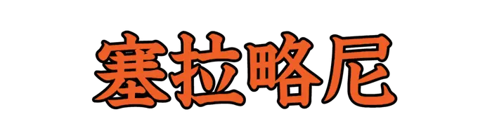 |
しえられおね |
西アフリカの西部、大西洋岸に位置する共和制国家。首都はフリータウン。 |
| Lv06_0445 |
|
えでぃんばら |
スコットランドの首都。ロージアン地方の首府。 |
| Lv06_0446 |
|
かんき |
心がわるく、よこしまであること。また、そのような人。 |
| Lv06_0447 |
|
くにまぎ |
住むのに適した、よい国土を見つけるため探して歩くこと。 |
| Lv06_0448 |
|
こす |
囲碁で、前に打った自分の石から一路斜めの点に石を打つ。 |
| Lv06_0449 |
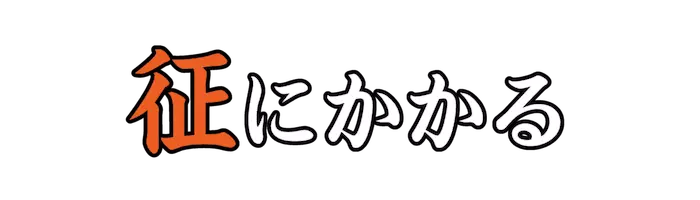 |
しちょう |
追いつめられたり、身の自由を奪われたりするたとえ。 |
| Lv06_0450 |
|
びちん |
いたずらに人に好意を示すことは、かえってその人にとって災いとなることのたとえ。 |
| Lv06_0451 |
|
かたちわ |
ひいきする。互いに徒党を結ぶ。 |
| Lv06_0452 |
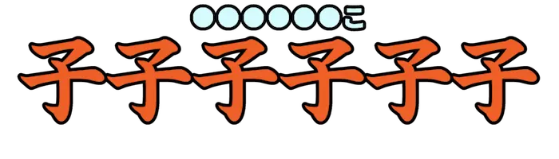 |
ねこのここねこ |
歌舞伎、浄瑠璃の外題。 |
| Lv06_0453 |
|
かすざめ |
カスザメ目カスザメ科の魚。北西太平洋の砂底で見られる。 |
| Lv06_0454 |
|
たくみ |
職人。技術者。また、ある分野において、きわめてすぐれた人。 |
| Lv06_0455 |
|
のぼ |
取り上げて公の場に出す。高い所へあがらせる。上の位に進ませる。 |
| Lv06_0456 |
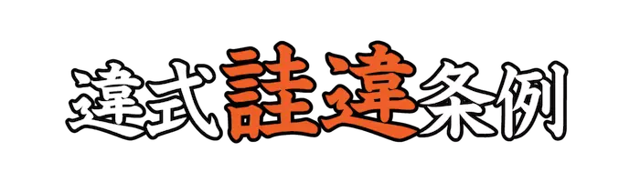 |
かいい |
明治初年における、軽微な犯罪を取り締まる単行の刑罰法。 |
| Lv06_0457 |
|
ぶえき |
中国音楽の十二律のひとつ。日本の十二律の<神仙|しんせん>にあたる。 |
| Lv06_0458 |
|
ちくちく |
長くまっすぐなさま。直立して伸びるさま。 |
| Lv06_0459 |
|
いいかし |
米に熱を通して炊く。 |
| Lv06_0460 |
|
かんじき |
ぬかるんでいる所を歩くために、履物の下に着用する道具。 |
| Lv06_0461 |
|
えみゅー |
ダチョウ目エミュー科の鳥。大型の走鳥類で現生の鳥ではダチョウに次いで大きい。 |
| Lv06_0462 |
|
あしゅくぶつ |
仏語で、遥か昔、<大日如来|だいにちにょらい>の<教化|きょうけ>により発願して成仏し、東方<善快|ぜんかい>浄土を建てた仏。 |
| Lv06_0463 |
|
かみなりおこし |
江戸浅草の雷門前で売りはじめたおこし。大阪のあわおこしに対する東京名物菓子。 |
| Lv06_0464 |
|
ほうとう |
生の手打ちうどんを味噌汁で煮込んだ食品。 |
| Lv06_0465 |
|
いら |
物や土地などを、一時的に<貸|か>し付ける。『<借|いら>う』の対義語として使用される。 |
| Lv06_0466 |
|
しお |
濡らす。しめらす。 |
| Lv06_0467 |
|
いわいうた |
民謡の分類のひとつ。祝いの式や宴席などでうたう歌。<祝儀歌|しゅうぎうた>。 |
| Lv06_0468 |
|
たんとく |
気持ちが落ち着かない様子。 |
| Lv06_0469 |
|
ばりけん |
カモ目カモ科の鳥。海岸や内陸の水辺に一夫多妻型の群れで生活する。 |
| Lv06_0470 |
|
しじかがま |
縮かんで元気がなくなる。 |
| Lv06_0471 |
|
いさり |
からすきの底で、地面にふれる部分。 |
| Lv06_0472 |
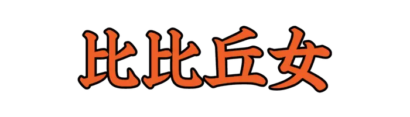 |
ひふくめ |
昔の遊びである『<子|こ>を<捕|と>ろ<子捕|こと>ろ』の古名。 |
| Lv06_0473 |
|
によ |
苦しそうにうなる。うめく。また、詠歌がうまくできず悩む。苦吟する。 |
| Lv06_0474 |
|
もら |
他人から食事などの世話を受ける。よその家の扶養を受ける。 |
| Lv06_0475 |
|
らべいか |
擦弦楽器のひとつ。中世、ポルトガルやスペインで用いられた。 |
| Lv06_0476 |
|
いさか |
しかる。責める。 |
| Lv06_0477 |
|
さか |
動物の肉を切り割く。ほふる。 |
| Lv06_0478 |
 |
さびつきげ |
ウマの毛色の名。褐色を帯びた月毛。また、その毛色のウマ。 |
| Lv06_0479 |
|
すべりひゆ |
ナデシコ目スベリヒユ科の一年草。食べられる野草としても知られる。 |
| Lv06_0480 |
|
じょうのお |
武具で、<鏃|やじり>の一種。軍陣用の、丸く先尖りのまっすぐな鏃。 |
| Lv06_0481 |
|
はふりこ |
神に仕えることを職とする人。神職。神主。 |
| Lv06_0482 |
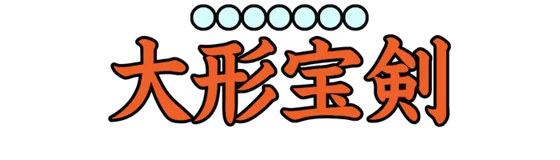 |
うちわさぼてん |
ナデシコ目サボテン科の亜科のひとつ。茎節をうちわに例えたことが由来とされる。 |
| Lv06_0483 |
|
ぼたんはなさく |
<七十二候|しちじゅうにこう>のひとつ。４月３０日から５月４日ごろ。 |
| Lv06_0484 |
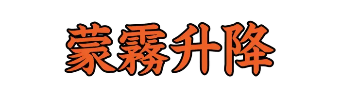 |
ふかききりまとう |
<七十二候|しちじゅうにこう>のひとつ。８月１８日から８月２２日ごろ。 |
| Lv06_0485 |
|
ももはじめてさく |
<七十二候|しちじゅうにこう>のひとつ。３月１１日から３月１５日ごろ。 |
| Lv06_0486 |
|
そうじねん |
四八歳。『桑年』とも。 |
| Lv06_0487 |
|
ふりつづみ |
小さな玉を二つつり下げ、柄を振ると音がなる小さな太鼓。 |
| Lv06_0488 |
|
くし |
不思議なこと。霊妙なこと。 |
| Lv06_0489 |
|
きたいもの |
魚や鳥の丸干しのこと。 |
| Lv06_0490 |
|
みだぬき |
イタチ目イタチ科の動物。アナグマの別名。 |
| Lv06_0491 |
|
よほろすじ |
ひざの裏側にある大きな筋肉。 |
| Lv06_0492 |
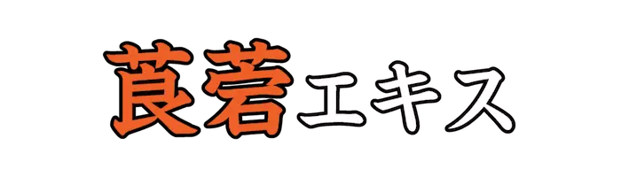 |
ろうと |
ハシリドコロから抽出したアルカロイドを含んだエキス。鎮痛剤、鎮痙剤に使用する。 |
| Lv06_0493 |
|
やんぬるかな |
絶望、慨嘆をあらわす語。もう今となってはどうにもしかたがない。 |
| Lv06_0494 |
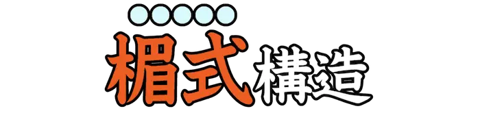 |
まぐさしき |
垂直な支柱と、それに支えられた横木を基本とする建築構造。 |
| Lv06_0495 |
|
どぶかっちり |
狂言。座頭が師を背負い川を渡ろうとすると通行人が代わりに背負われ、<悪戯|いたずら>をする。 |
| Lv06_0496 |
|
ゆするつき |
頭髪を洗うために用いる器。 |
| Lv06_0497 |
|
としょかん |
図書や記録を集め、公衆に閲覧させる施設。『圖』『書』『館』を簡略化して表した語。 |
| Lv06_0498 |
|
ちきりこうぶり |
かぶりものの一種。頭巾の類。特に、老婦人が喪中にかぶったかぶりもの。 |
| Lv06_0499 |
|
ろくどく |
田畑の土をならして使う、石製でローラーの形状をした農具。 |
| Lv06_0500 |
|
れいよう |
ウシ科の大部分の種を含む動物の総称。『アンテロープ』とも。 |
| Lv06_0501 |
|
しめてつじ |
以上の数を合わせたあとに、合計がいくらという場合に用いられる語。 |
| Lv06_0502 |
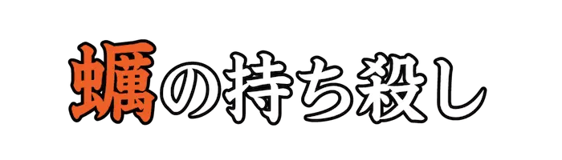 |
あざ |
役に立つ物や才能をもちながら、活用できないことのたとえ。宝の持ち腐れ。 |
| Lv06_0503 |
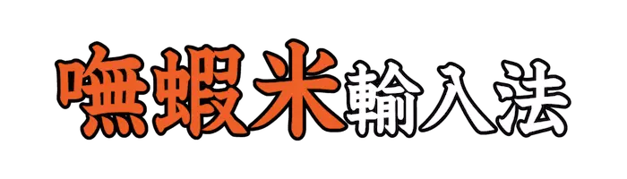 |
ぼしゃみー |
一九八九年に考案された、コンピュータ上における中国語入力方式。 |
| Lv06_0504 |
|
ちゅぶ |
漢字の部首のひとつ。『丸』などの、『丶』で分類した漢字の一群。 |
| Lv06_0505 |
|
ひ |
あたえたり、賜ることを表す語。 |
| Lv06_0506 |
|
ふーちー |
二股の木の下に筆などをつけ、砂上に置き書かれたしるしで神意を知る中国の占い。 |
| Lv06_0507 |
|
かんすい |
中華そばなどに使用される、粘弾性を増し、独特の色と香りをつける食品添加物。 |
| Lv06_0508 |
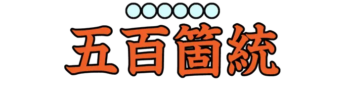 |
いおつすばる |
多くの玉を緒に貫いたもの。『<五百箇|いおつ>』は数の多く豊かなことをいう。 |
| Lv06_0509 |
|
るーろーはん |
豚バラ肉を醤油のスープで甘辛く煮込み、ご飯にかけた台湾の郷土料理。 |
| Lv06_0510 |
|
だんちく |
イネ目イネ科の多年草。ヨシタケの別名。 |
| Lv06_0511 |
|
どすいか |
ツツイカ目テカギイカ科の動物。スルメイカと姿が似る。 |
| Lv06_0512 |
|
きょん |
ウシ目シカ科の動物。特定外来生物として指定されている。 |
| Lv06_0513 |
|
ふしゅう |
バッタやイナゴのこと。 |
| Lv06_0514 |
|
きのこむしだまし |
コウチュウ目ゴミムシダマシ科の昆虫。 |
| Lv06_0515 |
|
まみちゃじない |
スズメ目ツグミ科の鳥。日本では主に渡りの途中に飛来し、少数が越冬する。 |
| Lv06_0516 |
|
かきちんない |
スズメ目ミソサザイ科の小鳥。ミソサザイの別名。 |
| Lv06_0517 |
|
ぎぎ |
ナマズ目ギギ科の魚。日本在来のギギ科としては最大。 |
| Lv06_0518 |
|
すけとうだら |
タラ目タラ科の魚。卵巣は明太子の原料となる。 |
| Lv06_0519 |
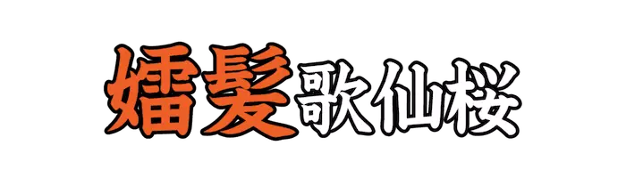 |
おんななるかみ |
歌舞伎、浄瑠璃の外題。『<鳴神|なるかみ>』の<鳴神上人|なるかみしょうにん>を<尼|あま>にした作品。 |
| Lv06_0520 |
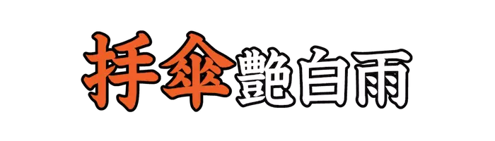 |
あいあいがさ |
歌舞伎、浄瑠璃の外題。 |
| Lv06_0521 |
 |
やえひとえ |
歌舞伎、浄瑠璃の外題。 |
| Lv06_0522 |
|
たら |
タラノキの若芽。主に食用として利用する。 |
| Lv06_0523 |
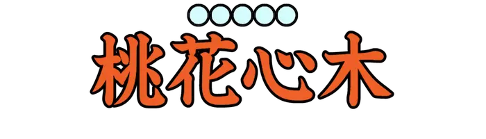 |
まほがにー |
ムクロジ目センダン科マホガニー属の総称。高級家具や高級楽器などに使用される。 |
| Lv06_0524 |
|
あんぺら |
イネ目カヤツリグサ科の多年草。茎を平らに叩き、むしろなどに利用される。 |
| Lv06_0525 |
|
かたみぐさ |
イネ目イネ科の多年草。また、マコモの別名。 |
| Lv06_0526 |
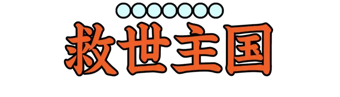 |
えるさるばどる |
中央アメリカ中部に位置する共和制国家。首都はサンサルバドル。 |
| Lv06_0527 |
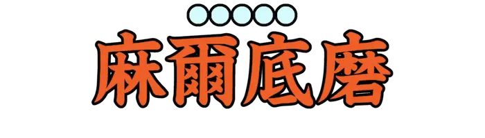 |
ぼるちもあ |
アメリカ合衆国のメリーランド州にある同州最大の都市。 |
| Lv06_0528 |
|
ろってるだむ |
オランダの南ホラント州に位置する基礎自治体。 |
| Lv06_0529 |
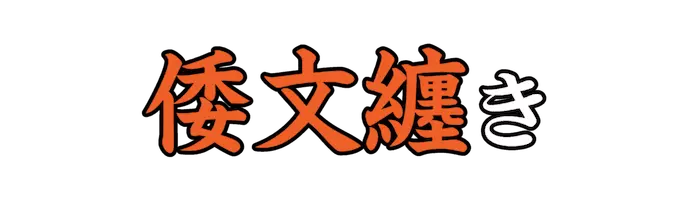 |
しずま |
古代の織物の一種である倭文を巻いたもの。 |
| Lv06_0530 |
|
むりょう |
中国から渡ってきた、繻子に似た絹織物。たていとが粗く、光沢がやや劣っている。 |
| Lv06_0531 |
|
ほきじ |
山腹の険しい道。がけみち。 |
| Lv06_0532 |
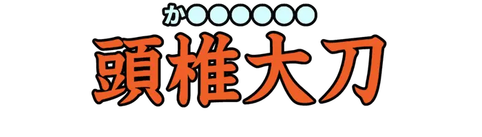 |
かぶつちのたち |
柄頭が拳状に膨らみをもった、古墳時代の刀装形式のひとつ。 |
| Lv06_0533 |
|
せめつづみ |
騎兵が馬の上で打ち鳴らす軍用の太鼓。 |
| Lv06_0534 |
|
げつげつ |
高いさま。高く盛んなさま。 |
| Lv06_0535 |
|
ならわし |
しきたり。習慣。 |
| Lv06_0536 |
|
かなえ |
食べ物を調理したり、祭事に使用する三本脚の器。 |
| Lv06_0537 |
|
みこしき |
よく似ているもののたとえ。 |
| Lv06_0538 |
|
ぷーあるちゃ |
中国<雲南|うんなん>省南部及び南西部を原産地とする、発酵させて作る茶のひとつ。 |
| Lv06_0539 |
|
うめのみきばむ |
<七十二候|しちじゅうにこう>のひとつ。６月１６日から６月２０日ごろ。 |
| Lv06_0540 |
|
くまあなにこもる |
<七十二候|しちじゅうにこう>のひとつ。１２月１２日から１２月１５日ごろ。 |
| Lv06_0541 |
|
むぎのときいたる |
<七十二候|しちじゅうにこう>のひとつ。５月３１日から６月５日ごろ。 |
| Lv06_0542 |
|
ほうほうぜん |
ふくよかで肉づきのよいさま。 |
| Lv06_0543 |
|
さがりふすべ |
たれ下がったいぼやこぶのこと。 |
| Lv06_0544 |
|
だくぶ |
漢字の部首のひとつ。やまいだれ。 |
| Lv06_0545 |
|
かぐやひめ |
『竹取物語』に登場する、光る竹の中から見つけ出され、<翁|おきな>夫婦に育てられる主人公。 |
| Lv06_0546 |
|
うちあわせ |
内側の腿。大腿部。 |
| Lv06_0547 |
|
やぶさ |
物惜しそうな様子をみせる。 |
| Lv06_0548 |
|
おざ |
北斗七星の柄の先が、十二支のいずれかの方向を指す。 |
| Lv06_0549 |
|
ちんすこう |
小麦粉にラードと砂糖を加えて焼いた、沖縄県名産の菓子。 |
| Lv06_0550 |
|
あつゆ |
中国に伝わる伝説上の神、怪物。人の顔と赤い牛のような姿、馬のような足をもつ。 |
| Lv06_0551 |
|
てきとう |
才気が衆人よりはるかにすぐれていること。 |
| Lv06_0552 |
|
ない |
地盤や大地のこと。『ないふる』で、地震が起こることを表す。 |
| Lv06_0553 |
|
なにによりてか |
強い願望の意を表す語。いかでか。どうして。 |
| Lv06_0554 |
|
おたけび |
男らしい勇ましい叫び声をたてること。 |
| Lv06_0555 |
|
か |
農作物の被害を防ぐために行う狩猟。 |
| Lv06_0556 |
|
ほし |
晴れた夜空に点々と光って見える天体。 |
| Lv06_0557 |
|
くたび |
疲れはてて元気がなくなる。また、使い古して見た目が悪くなる。 |
| Lv06_0558 |
|
ほろ |
知覚がにぶくなる。また、まとまっていたものがくずれる。 |
| Lv06_0559 |
|
うごな |
集まる。寄り集まる。 |
| Lv06_0560 |
|
うばらぐつわ |
朝儀の出行列のときに用いる、銜のひとつ。鏡板が茨の形状に似ていることから。 |
| Lv06_0561 |
|
だいたい |
日傘や、日よけの笠。また、分別のないさま。 |
| Lv06_0562 |
|
ぬらりひょん |
ぬらぬらとして、ヒョウタンナマズのようにつかまえどころがないとされる日本の妖怪。 |
| Lv06_0563 |
|
うら |
人に悪い言葉を浴びせて傷つける。誹謗中傷をする。 |
| Lv06_0564 |
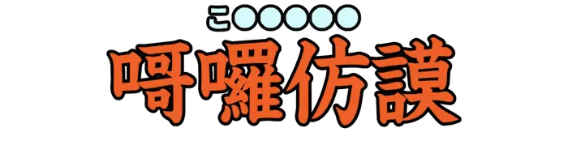 |
ころろほるむ |
ハロゲン化アルキルのひとつ。溶媒や溶剤として利用されている。 |
| Lv06_0565 |
|
おおかねひら |
平安時代末期に作られたとされる日本刀。現存する日本刀の最高傑作として知られる。 |
| Lv06_0566 |
|
いゆ |
からかう。ひやかす。 |
| Lv06_0567 |
|
あざ |
魚肉などが腐る。また、荒れ果てる。 |
| Lv06_0568 |
|
ほさ |
祈って他人の不幸を願う。のろう。 |
| Lv06_0569 |
|
ねもころごろ |
入念に。心から。心をこめて。 |
| Lv06_0570 |
|
まねき |
織機の道具のひとつ。足の親指で踏んで、綜を上下させる板。 |
| Lv06_0571 |
 |
とど |
すわる。かがむ。しゃがむ。 |
| Lv06_0572 |
|
すがいすがい |
つぎつぎに行なわれるさま。また、あとからあとから現われるさま。 |
| Lv06_0573 |
 |
いやいや |
礼儀正しい。うやうやしい。 |
| Lv06_0574 |
|
ふすさ |
多く。たくさんに。ふさに。 |
| Lv06_0575 |
|
そそばし |
あわただしく走る。 |
| Lv06_0576 |
|
きゃびあ |
チョウザメの卵巣をほぐしたものの塩漬け。慣用的な表記。 |
| Lv06_0577 |
|
くいぜ |
昔の習慣に固執するがあまり、融通が利かなくなることのたとえ。 |
| Lv06_0578 |
|
いたつき |
木や金属などで作った、先のとがっていない小さい鏃。 |
| Lv06_0579 |
|
こうさく |
古代、朔日に天皇が<大極殿|だいごくでん>で官吏の出勤日が記された公文書を閲覧する儀式。 |
| Lv06_0580 |
|
たまたま |
時おり。また、偶然に。 |
| Lv06_0581 |
|
うけもちのかみ |
日本神話で、五穀をつかさどる神。食物の神。 |
| Lv06_0582 |
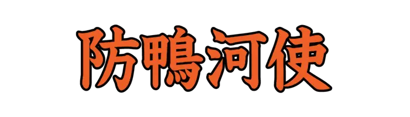 |
ぼうかし |
都の浸水を防ぐため、平安初期に設置された<鴨川|かもがわ>の堤防修築の任をあたった官司。 |
| Lv06_0583 |
|
ゆおう |
声が低くなるさま。 |
| Lv06_0584 |
|
こわい |
『<絵本百物語|えほんひゃくものがたり>』に登場する妖怪。生前に他人の食物を食うような者がなるとされる。 |
| Lv06_0585 |
 |
かんやらい |
日本神話において、神を追放すること。 |
| Lv06_0586 |
|
てこんどー |
朝鮮半島に伝わる武術を集めたとされる韓国の格技。足と拳を用いて攻撃する。 |
| Lv06_0587 |
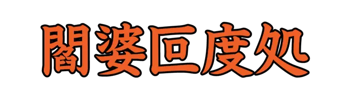 |
えんばはどしょ |
無間地獄のひとつ。畑や飲み水の水源を破壊し、人々を<渇死|かっし>させた者が落ちる。 |
| Lv06_0588 |
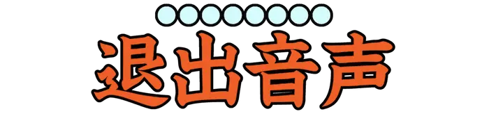 |
まかでおんじょう |
雅楽で、楽人や舞人が退出するときに演奏される音楽。 |
| Lv06_0589 |
|
ばんさんすー |
細切りにしたダイコンやキュウリ、春雨などを酢であえた中国料理。 |
| Lv06_0590 |
|
がいろめづち |
陶磁器に用いる粘土の一種。<長石質母岩|ちょうせきしつぼがん>の風化作用でできたもの。 |
| Lv06_0591 |
|
げんきょう |
<十二次|じゅうにじ>のひとつ。『<星紀|せいき>』と『<娵訾|しゅし>』の間に位置する。 |
| Lv06_0592 |
|
けんびょうぐう |
<宿曜経|しゅくようきょう>での<十二宮|じゅうにきゅう>のひとつ。『<摩竭宮|まかつきゅう>』と『<双魚宮|そうぎょきゅう>』の間に位置する。 |
| Lv06_0593 |
|
せばせば |
非常に狭い。幅がせまく窮屈である。 |
| Lv06_0594 |
|
かし |
船を繋ぎ止めておくために水中に立てた杭。 |
| Lv06_0595 |
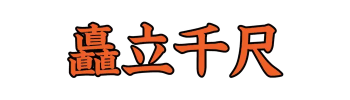 |
ちくりゅうせんせき |
極めて高く、まっすぐ立っていること。 |
| Lv06_0596 |
|
しな |
物を隠す。また、物事を他にわからないよう秘密にする。 |
| Lv06_0597 |
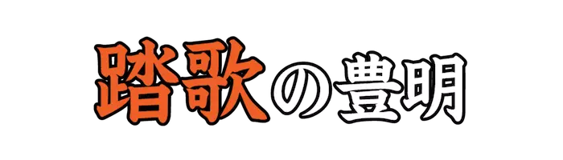 |
あらればしり |
なかむかし、足で地を踏みながら列をなして歌いながら祝う、宮中の正月行事。 |
| Lv06_0598 |
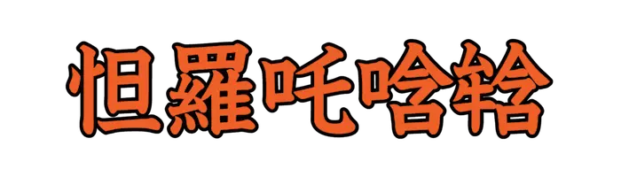 |
たらたかんまん |
不動明王の真言の一部。不動の威力をたたえた、真言の結びの語。 |
| Lv06_0599 |
 |
かな |
舞をまう。舞って手を動かす。 |
| Lv06_0600 |
|
やっとこ |
針金や板金、鍛造材料などをはさむときに用いる工具。 |
| Lv06_0601 |
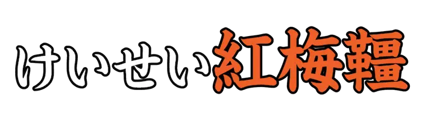 |
こうばいたずな |
歌舞伎、浄瑠璃の外題。 |
| Lv06_0602 |
|
あいはい |
厚い雲に覆われて、薄暗いさま。 |
| Lv06_0603 |
|
くえはららか |
蹴散らす。蹴って散乱させる。 |
| Lv06_0604 |
|
ひたぶるこころ |
ひたむきな心。一途に思いつめた心。また、情け容赦のない心。 |
| Lv06_0605 |
|
かのしし |
シカの古名。また、シカの肉。 |
| Lv06_0606 |
|
ごうな |
エビ目ヤドカリ上科の動物。ヤドカリの古名。 |
| Lv06_0607 |
|
つめたがい |
タマガイ科の巻貝。北海道以南から沖縄にかけて広く分布する。 |
| Lv06_0608 |
|
ひどら |
花クラゲ目ヒドラ科の動物の総称。細長い体に長い触手を持つ。 |
| Lv06_0609 |
|
ひとごのかみ |
上代で、一群の人の長。首領。 |
| Lv06_0610 |
|
ぜぜがこう |
組み合わせた手を額に当ててのぞき、子供を脅かす時の言葉。また、昔の遊びのひとつ。 |
| Lv06_0611 |
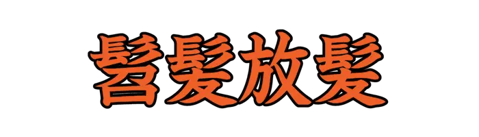 |
うないはなり |
少女が髪を結い上げずに、左右にかき分けて垂らした状態にしていること。 |
| Lv06_0612 |
|
おしつけ |
天皇や皇后に仕える者が、御食事の前にすべての料理や飲み物を毒見すること。 |
| Lv06_0613 |
|
ひし |
日が曇る。空模様が悪くなる。 |
| Lv06_0614 |
|
あおびえ |
青竹で作った、小さな刀。 |
| Lv06_0615 |
|
かくのあわ |
小麦粉を練って緒を結んだ形に作り、油で揚げたものとされる古代の菓子。 |
| Lv06_0616 |
|
がろん |
ヤード・ポンド法の体積の計量単位。 |
| Lv06_0617 |
|
ねた |
他人の成功や長所を強くうらやんで憎む。 |
| Lv06_0618 |
|
ろうろう |
鼓が鳴る音を表した語。 |
| Lv06_0619 |
|
かかわわろうず |
絹のぼろきれを加えて編んだ、わらの履物。 |
| Lv06_0620 |
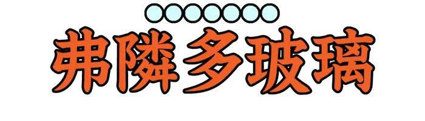 |
ふりんとがらす |
鉛の含有量が高いガラス。主にレンズやカットグラスに用いられる。 |
| Lv06_0621 |
|
はつかねずみ |
ネズミ目ネズミ科の動物の総称。ノネズミとしても一般的。 |
| Lv06_0622 |
|
やく |
ウシ目ウシ科の動物。体表から垂れ下がる長い毛が特徴。 |
| Lv06_0623 |
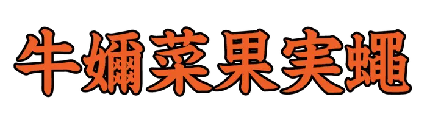 |
きじょらんみばえ |
ハエ目ミバエ科の昆虫。 |
| Lv06_0624 |
|
あかえんば |
トンボの種類のうち腹部が赤色、橙色などの個体に対する古名。 |
| Lv06_0625 |
|
なわせみ |
セミ類のメスのこと。発音器官を持たないため鳴かない。 |
| Lv06_0626 |
|
いわな |
サケ目サケ科の魚。多くの種が、スポーツフィッシングの対象魚として人気が高い。 |
| Lv06_0627 |
|
ちゃうちゃう |
中国<華北|かほく>原産の犬種のひとつ。 |
| Lv06_0628 |
|
かき |
カキ目もしくはカキ上科の貝類の総称。『海のミルク』と呼ばれる。 |
| Lv06_0629 |
|
ほうひゅう |
サイチョウ目ヤツガシラ科の鳥。ヤツガシラの別名。 |
| Lv06_0630 |
|
くじかすべ |
ガンギエイ目ヒトツセビレカスべ科の魚。<吻|ふん>が軟らかいことなどが特徴。 |
| Lv06_0631 |
|
つわぶき |
キク目キク科の多年草。海岸近くの岩場などに自生する。 |
| Lv06_0632 |
|
くくさ |
サイカチの一種とされる。薬用として、古くから用いられていた。 |
| Lv06_0633 |
|
けんぽなし |
バラ目クロウメモドキ科の落葉高木。庭木に使われ、太った果柄は食用となる。 |
| Lv06_0634 |
|
おおけたで |
ナデシコ目タデ科の一年草。 |
| Lv06_0635 |
|
ふい |
シソ目オオバコ科の多年草。オオバコの別名。 |
| Lv06_0636 |
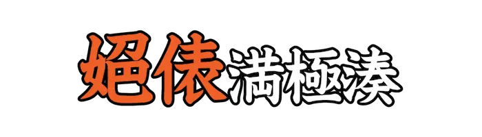 |
よねだわら |
歌舞伎、浄瑠璃の外題。 |
| Lv06_0637 |
|
へくたーる |
メートル法における面積の単位。 |
| Lv06_0638 |
|
た |
まわる。めぐる。また、道などが折れ曲がる。 |
| Lv06_0639 |
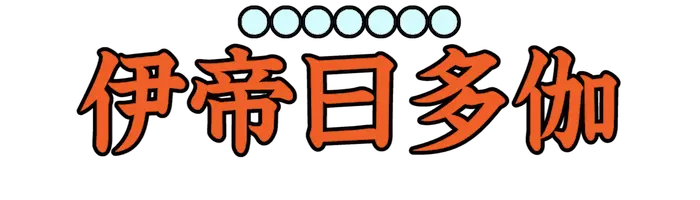 |
いていわったか |
仏語で、十二部経のひとつ。仏弟子の<過去世|かこぜ>の行為を述べたもの。 |
| Lv06_0640 |
 |
じゃーたか |
仏語で、十二部経のひとつ。仏の<過去世|かこぜ>の修行を述べたもの。 |
| Lv06_0641 |
|
ひたつら |
刀の<刃文|はもん>のひとつ。乱れ焼のほかに、平地に複雑なかたちの焼きが数多くはいったもの。 |
| Lv06_0642 |
|
おちおち |
あの件、この件。箇条箇条。 |
| Lv06_0643 |
|
ういじ |
泥や、泥土のこと。『<浮泥|うきひじ>』の変化したものとされる。 |
| Lv06_0644 |
|
はかり |
血の流れた跡。動物の血がしたたった跡。猟などで使用する語。 |
| Lv06_0645 |
|
なだいめん |
<行幸|ぎょうこう><行啓|ぎょうけい>、<御幸|ごこう><供奉|ぐぶ>の親王や公卿を点呼し、それぞれに特定の形式で名のらせること。 |
| Lv06_0646 |
|
つむれ |
小高くなった土地。小さな岡。 |
| Lv06_0647 |
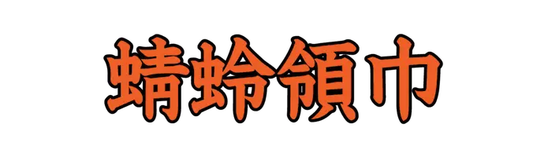 |
あきつひれ |
トンボのはねのように、薄く織った布で作った美しい服飾具。 |
| Lv06_0648 |
|
みゃくもく |
小雨や、霧のような細かい雨。 |
| Lv06_0649 |
|
あふどこ |
股にかけて越える。またがる。また、足をそろえておどりあがる。 |
| Lv06_0650 |
|
ひらたぶね |
上代から近世に至るまで、大型川船として貨客の輸送に使われた、細長い船。 |
| Lv06_0651 |
|
たも |
魚をすくい捕るのに用いる、小形のすくいあみ。 |
| Lv06_0652 |
|
あやめ |
キジカクシ目アヤメ科の多年草の総称。 |
| Lv06_0653 |
|
まも |
かばいまもる。たすける。 |
| Lv06_0654 |
|
いぬ |
連れて行っていっしょに寝る。共寝する。 |
| Lv06_0655 |
|
こうごう |
山が高くて険しいさま。 |
| Lv06_0656 |
 |
ふむはなち |
仕掛けを踏むと、その獣に矢を放つ罠。 |
| Lv06_0657 |
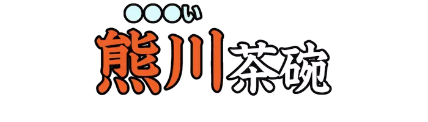 |
こもがい |
高麗茶碗のひとつ。口縁が外側に曲がり、見込みに円形のくぼみがある。 |
| Lv06_0658 |
|
でつぜん |
疲れて弱りきること。 |
| Lv06_0659 |
|
はが |
木の枝やわらなどに粘着剤を塗り、田などのおとりのそばに置いて、鳥を捕える罠。 |
| Lv06_0660 |
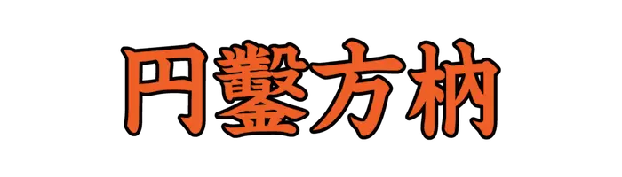 |
えんさくほうぜい |
物事が互いにかみ合わないことのたとえ。 |
| Lv06_0661 |
|
がまり |
<殿|しんがり>から小部隊を留まらせ、追ってくる敵軍の足止めを繰り返し本軍を生還させる戦術。 |
| Lv06_0662 |
|
かいへんほう |
<篆書体|てんしょたい>の形式のひとつ。字体が整っていないことから。 |
| Lv06_0663 |
|
しじら |
細かいしわ。また、細かいしわのある絹織物。 |
| Lv06_0664 |
|
ぎゃくしゃく |
表情や態度が険しいさま。また、悟らないさま。 |
| Lv06_0665 |
|
かりうち |
平安時代の遊戯。『ユンノリ』のように四枚の板を投げて使用するとされる。 |
| Lv06_0666 |
|
あいたげひと |
客とともに飲食する人。身分の高い人と共に食事する人。 |
| Lv06_0667 |
 |
よさし |
天の命令。天命。 |
| Lv06_0668 |
|
ききん |
未婚の女性用の衣服。 |
| Lv06_0669 |
|
ゆうじゅう |
ものが乾ききらないさま。 |
| Lv06_0670 |
|
ちはや |
神事に奉仕する巫女や台所仕事などをする女性が用いたたすき。 |
| Lv06_0671 |
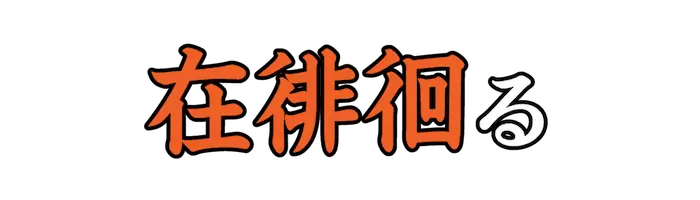 |
ありたもとお |
ひきつづきめぐり歩く。変わることなく歩きまわる。 |
| Lv06_0672 |
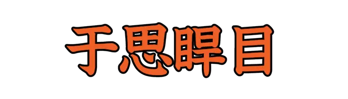 |
うさいかんもく |
ひげが多く、目の大きなさま。 |
| Lv06_0673 |
|
あいくち |
くちびるが開いて、歯が現われること。また、そういう癖のあること。 |
| Lv06_0674 |
|
あらもと |
玄米に混じっているもみ。また、粉米。 |
| Lv06_0675 |
|
なわ |
背丈が細長く高いさま。やせて丈の高いさま。 |
| Lv06_0676 |
|
えんこく |
夏の日の、燃えるように非常に暑いこと。 |
| Lv06_0677 |
|
おいずり |
<修験者|しゅげんじゃ>、<行脚僧|あんぎゃそう>などが旅行中、仏具や生活品などを入れて、背負って歩く容器。 |
| Lv06_0678 |
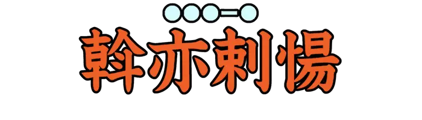 |
おいらーと |
モンゴルの部族のひとつ。モンゴル高原の西部から、<新疆|しんきょう>の北部にかけて居住する。 |
| Lv06_0679 |
|
おえふ |
魔力などによって、気力を失って倒れ伏す。 |
| Lv06_0680 |
|
おうしもと |
生い茂った、若木の小枝。 |
| Lv06_0681 |
|
おうばん |
飯器に盛った飯。椀に盛ってすすめる飯。 |
| Lv06_0682 |
|
おさかき |
はたおり機具の部品を作る竹細工師。転じて、種々の竹細工師。 |
| Lv06_0683 |
|
おもづら |
くつわを固定するため、馬の頭にかける緒。 |
| Lv06_0684 |
|
かくい |
根の付いた木の切り株。 |
| Lv06_0685 |
|
かながき |
農具のひとつ。熊手の形の地ならしの類で、カシの台に鉄の歯を植えたもの。 |
| Lv06_0686 |
|
かなほだし |
刑具のひとつ。金属製の足枷。 |
| Lv06_0687 |
|
かばち |
頬骨からおとがいにかけての骨格。 |
| Lv06_0688 |
|
かみえ |
料紙に、物語を絵として描いたもの。 |
| Lv06_0689 |
|
がんぎょうばね |
障子などの骨組みを組むとき、一番軒先に近い材木が下がるのを防ぐ大きな材木。 |
| Lv06_0690 |
|
がんさ |
あそぶこと。嬉楽すること。 |
| Lv06_0691 |
|
がんじょう |
名馬に仕上げるための五つの条件。蹄、性質、体格、血統、生産地の五つ。 |
| Lv06_0692 |
|
くよくがん |
中国産の<端渓|たんけい>と呼ばれる石から作られたすずりにある、丸い斑紋。 |
| Lv06_0693 |
|
くりかわのくつ |
令制の礼服用のくつ。黒革を用い、爪先の鼻を高くそらせたもの。 |
| Lv06_0694 |
|
けら |
日本古来のたたら吹き製法によって砂鉄からつくられる、海綿状の加工されていない鋼。 |
| Lv06_0695 |
 |
こうちーる |
アジアやヨーロッパなど各地に分布する民俗楽器。『ジューズ・ハープ』とも。 |
| Lv06_0696 |
 |
こす |
たたく。怒って痛い目にあわせる。 |
| Lv06_0697 |
|
こんだい |
髪とひげをそること。 |
| Lv06_0698 |
|
さいみ |
麻織物の一つ。たていと、よこいとともに大麻の太糸で目をあらく平織りにした布。 |
| Lv06_0699 |
|
さしづと |
江戸中期末に流行した、つとを高くする髪型。 |
| Lv06_0700 |
|
しんじつ |
親しみなじむこと。また、親しい間がらであること。 |
| Lv06_0701 |
|
うんぜんかん |
すり立てのヤマイモに砂糖と卵をねり合わせ、蒸して雲形に切ったもの。 |
| Lv06_0702 |
|
かんこのき |
キントラノオ目トウダイグサ科の落葉低木。 |
| Lv06_0703 |
|
さやか |
明らかなさま。月の光の明るいさま。 |
| Lv06_0704 |
|
すすじ |
心がせき立つ気分になる釣針の意とされる。 |
| Lv06_0705 |
|
かも |
酒を二度発酵させ、醸造する。 |
| Lv06_0706 |
|
ちゅんてん |
行き悩むこと。苦しんで、行きつ戻りつすること。 |
| Lv06_0707 |
|
とうたい |
こごえることと飢えること。生活に苦しむこと。 |
| Lv06_0708 |
|
のしがたのくぎ |
頭が笠形の釘。また、鋲のこと。 |
| Lv06_0709 |
|
はあ |
風によって稲の穂が揺れること。 |
| Lv06_0710 |
|
はいちょー |
ビゼンクラゲを石灰などが混ざった液に入れ塩漬けし、茹でて細かく刻んだ中国料理。 |
| Lv06_0711 |
|
か |
鼻水を強く出して、紙などでふき取る。 |
| Lv06_0712 |
|
まさい |
切れ味のよい剣のこと。 |
| Lv06_0713 |
|
よちおざし |
魚を竹の串に刺して干したもの。 |
| Lv06_0714 |
|
わんたん |
小麦粉の生地を薄く伸ばし四角状に切り、肉と野菜を包み茹で、スープに入れた料理。 |
| Lv06_0715 |
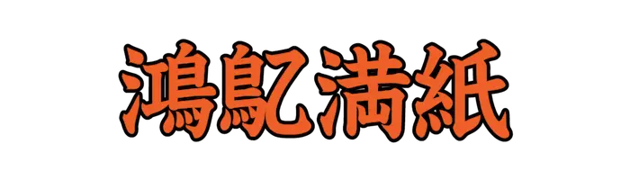 |
ぐいつまんし |
無造作に走り書きをすること。 |
| Lv06_0716 |
|
ものがたり |
歌舞伎、浄瑠璃の外題。 |
| Lv06_0717 |
|
ゆっけ |
細かくたたいた赤身に味付けをし、卵黄を乗せた韓国料理。 |
| Lv06_0718 |
|
きんせんかさく |
<七十二候|しちじゅうにこう>のひとつ。１１月１７日から１１月２１日ごろ。 |
| Lv06_0719 |
|
ふきのはなさく |
<七十二候|しちじゅうにこう>のひとつ。１月２０日から１月２４日ごろ。 |
| Lv06_0720 |
|
たく |
作る。細工をする。 |
| Lv06_0721 |
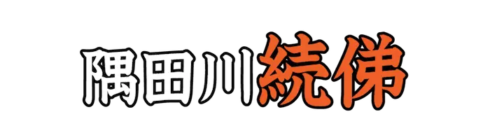 |
ごにちのおもかげ |
歌舞伎、浄瑠璃の外題。 |
| Lv06_0722 |
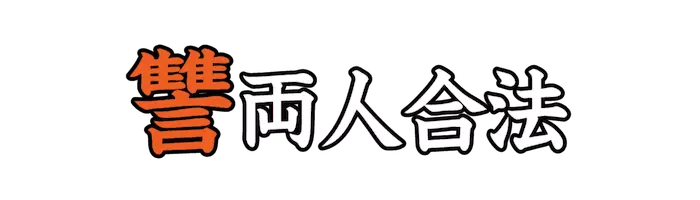 |
かたきうち |
歌舞伎、浄瑠璃の外題。 |
| Lv06_0723 |
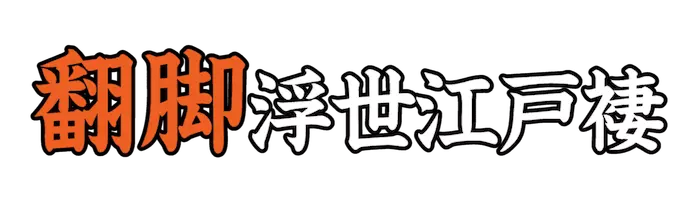 |
そめかえて |
歌舞伎、浄瑠璃の外題。 |
| Lv06_0724 |
|
かなびしゃ |
コイ目コイ科の魚。カマツカの別名。 |
| Lv06_0725 |
|
いのしし |
クジラウシ目イノシシ科の動物。雑食性で、植物の地下茎などを食べる。 |
| Lv06_0726 |
|
ほっけ |
カサゴ目アイナメ科の魚。また、ガンギエイ目の生物の総称。 |
| Lv06_0727 |
|
そにどり |
ブッポウソウ目カワセミ科の小鳥。カワセミの古名。 |
| Lv06_0728 |
|
あかかがち |
ホオズキの古名。 |
| Lv06_0729 |
|
ねぬなわ |
スイレン目ハゴロモモ科の多年草。ジュンサイの別名。 |
| Lv06_0730 |
|
おべりすく |
主に古代エジプト新王国時代期に製作され、神殿などに立てられた記念碑。 |
| Lv06_0731 |
|
てにをは |
江戸後期に作られた語学書のひとつ。著者は<富樫広蔭|とがしひろかげ>。 |
| Lv06_0732 |
|
あらめいろね |
母親の違う兄。異母兄。 |
| Lv06_0733 |
|
さざれいし |
現存する、日本最古の観賞石。群がる岩山のような形状をしている。 |
| Lv06_0734 |
 |
けんむん |
奄美群島に伝わる、カッパの特徴をもった妖怪。 |
| Lv06_0735 |
|
てんぴつ |
意義をよく理解しないで、ただ文字だけを読むこと。 |
| Lv06_0736 |
|
ほめ |
ざわざわと音をたてる。 |
| Lv06_0737 |
 |
あせ |
二人称の人代名詞。女子が男子を親しんで呼ぶ語。 |
| Lv06_0738 |
 |
きか |
きしり合ったり、食い違う意味とされる。 |
| Lv06_0739 |
|
たがね |
上代の、食物の名前とされる。 |
| Lv06_0740 |
|
ちゅそく |
韓国で行われる、一年の豊作を祈り、先祖に感謝する行事。 |
| Lv06_0741 |
|
けほんおどり |
和歌山県<御坊|ごぼう>市<薗|その>に伝わる、<念仏踊|ねんぶつおどり>系の<風流踊|ふりゅうおどり>のひとつ。 |
| Lv06_0742 |
|
あかべよろい |
<短甲|みじかよろい>、<桂甲|かけよろい>などに付属し、頸部や肩の上部を覆い守るもの。 |
| Lv06_0743 |
|
あき |
吸腔目アッキガイ科の巻き貝。アカニシの古名。 |
| Lv06_0744 |
|
あつかいじょう |
近世における、訴訟に関する内済証文のひとつ。 |
| Lv06_0745 |
|
おおはらえ |
国中の罪やけがれをはらい清める神事。 |
| Lv06_0746 |
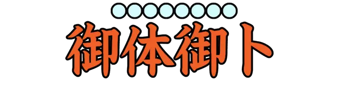 |
おおみまのみうら |
天皇の身体を亀甲でうらない、<卜兆|うらかた>に現れたところを奏上する儀式。 |
| Lv06_0747 |
|
こちごち |
ごつごつとしてなめらかでないさま。無骨であるさま。 |
| Lv06_0748 |
|
おもてごてん |
公の儀式、政務をとり行なう正殿。 |
| Lv06_0749 |
|
あかときくた |
夜がその盛りを過ぎて、明け方近いころ。 |
| Lv06_0750 |
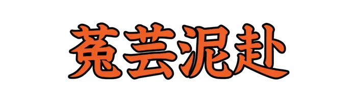 |
つぎねふ |
神社などの由来、遍歴を記した文書。著者は<北村季吟|きたむらきぎん>。 |
| Lv06_0751 |
|
こいのしらなみ |
歌舞伎、浄瑠璃の外題。 |
| Lv06_0752 |
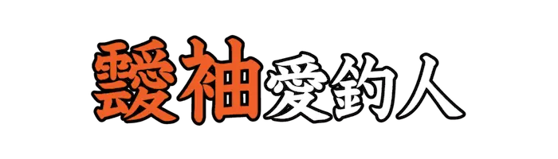 |
たなびくそで |
歌舞伎、浄瑠璃の外題。 |
| Lv06_0753 |
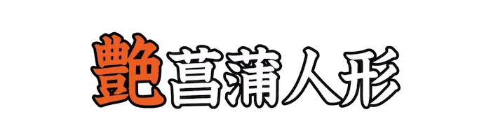 |
ゆるしのいろ |
歌舞伎、浄瑠璃の外題。 |
| Lv06_0754 |
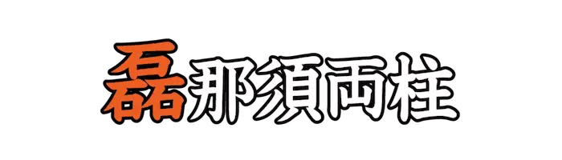 |
さざれいし |
歌舞伎、浄瑠璃の外題。 |
| Lv06_0755 |
 |
ゆうげしょう |
歌舞伎、浄瑠璃の外題。 |
| Lv06_0756 |
|
せんざんこう |
鱗甲目センザンコウ科の動物の総称。身体を覆う硬い鱗が特徴。 |
| Lv06_0757 |
|
わたか |
コイ目コイ科の魚。日本の固有種。 |
| Lv06_0758 |
|
ちゅうひ |
タカ目タカ科の鳥。草原や<葦原|よしわら>、湿地などに棲息する。 |
| Lv06_0759 |
|
らいひー |
スズキ目タイワンドジョウ科の魚。『<雷魚|らいぎょ>』とも。 |
| Lv06_0760 |
|
さより |
ダツ目サヨリ科の魚。沿岸の海面近くに棲息する。 |
| Lv06_0761 |
|
ちゃんぱぎく |
キンポウゲ目ケシ科の多年草。『タケニグサ』とも。 |
| Lv06_0762 |
|
ひめうり |
ウリ目ウリ科のつる性一年草。マクワウリの一品種。 |
| Lv06_0763 |
|
ひめやしゃぶし |
ブナ目カバノキ科の落葉低木。 |
| Lv06_0764 |
|
さるなし |
ツバキ目マタタビ科のつる性植物。キウイフルーツのような果実をつくる。 |
| Lv06_0765 |
|
さじー |
バラ目バラ科の落葉低木の総称。果実は植物のなかでも栄養価が高い。 |
| Lv06_0766 |
|
すめらおおもとお |
国家の守り神とした、土地の神と五穀の神。天地の神。 |
| Lv06_0767 |
|
わいわい |
あきらかである。分明である。 |
| Lv06_0768 |
|
ちゅうこうしん |
陰暦七月七日に、女性が針を水に浮かべてその影の形によって裁縫の上達を占うこと。 |
| Lv06_0769 |
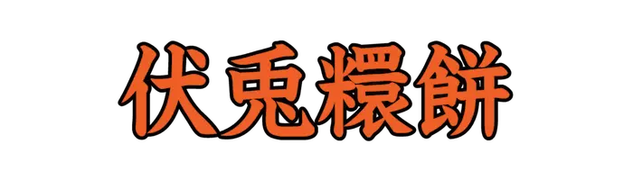 |
ふとまがりもち |
元日に広島の<厳島|いつくしま>神社で、神前に供えた神饌のための餅。 |
| Lv06_0770 |
|
くだもののつかさ |
令制で宮内省<大膳職|だいぜんしき>に置かれた、果実類の保管、出納などを担う官職。 |
| Lv06_0771 |
|
ほへ |
<瓮|かめ>の中でたく火の意とされる。上代、油火のほかに室内の照明とした。 |
| Lv06_0772 |
|
そだ |
十分に備わり足りている。 |
| Lv06_0773 |
|
ひょくおく |
物を打ったり、鳥が羽ばたく音の形容。 |
| Lv06_0774 |
|
さかん |
令制で、中務省の第四等の官。<大録|だいさかん>、<少録|しょうさかん>の別がある。 |
| Lv06_0775 |
|
たつずまい |
上代で、立ったり座ったりしながらおこなう舞踊。 |
| Lv06_0776 |
|
たひろか |
手のひらを返す。手をひらひらさせる。 |
| Lv06_0777 |
|
とうば |
貴人などの姿や形を受け、その人に似る。 |
| Lv06_0778 |
|
よきことをきく |
<斧|よき>、琴、菊の模様を染め出し、『善き事を聞く』の意を表した<謎染|なぞぞ>め。 |
| Lv06_0779 |
|
からすなめり |
足のふくらはぎの筋肉が、突発的に痙攣をおこすこと。 |
| Lv06_0780 |
|
のえふ |
あおむけに寝る。倒れ伏す。また、風になびく。 |
| Lv06_0781 |
|
しる |
はっきりとしたさま。きわだっているさま。 |
| Lv06_0782 |
|
のま |
神や仏に請い、お願いする。 |
| Lv06_0783 |
|
むかた |
吐き気をもよおし、食物を吐く。 |
| Lv06_0784 |
|
あと |
結婚を申し込む。妻として迎える。また、誘う。 |
| Lv06_0785 |
|
そぼ |
雨や涙などにしっとり濡れる。うるおう。 |
| Lv06_0786 |
|
ひところ |
ひとしく並ぶ。いっしょに並ぶ。 |
| Lv06_0787 |
|
おや |
毒気、妖気、魔力などで感覚を失わせる。人を惑わし、悩ます。 |
| Lv06_0788 |
|
うじはや |
物事の状態がさし迫っているさま。情勢、地勢などが切迫しているさま。 |
| Lv06_0789 |
|
さぬ |
眠りにつくこと。寝ること。 |
| Lv06_0790 |
|
しけ |
よごれた状態である。荒れている。 |
| Lv06_0791 |
|
そのかみすがた |
当時の流行の服装のこと。 |
| Lv06_0792 |
|
ばさら |
派手に見栄をはること。また、遠慮なく振る舞うこと。 |
| Lv06_0793 |
|
あからしまかぜ |
急に激しく吹き起こる風。<暴風|ぼうふう>。 |
| Lv06_0794 |
|
かんとう |
古代中国神話に登場する悪神。四罪の一人に挙げられる。 |
| Lv06_0795 |
|
だくぼく |
道などが平坦でなく凹凸のあること。『<凸凹|でこぼこ>』とも。 |
| Lv06_0796 |
|
たんたん |
動物が舌を出すさま。 |
| Lv06_0797 |
|
せんせい |
音が乱れたり、調和していないさま。すらすらと運ばないさま。 |
| Lv06_0798 |
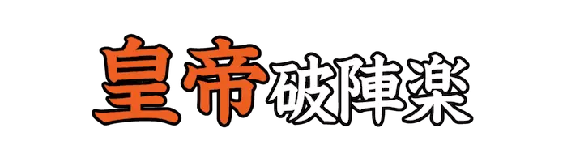 |
おうだい |
雅楽の舞曲で、唐楽四大曲のひとつ。<壱越|いちこつ>調で新楽の大曲。 |
| Lv06_0799 |
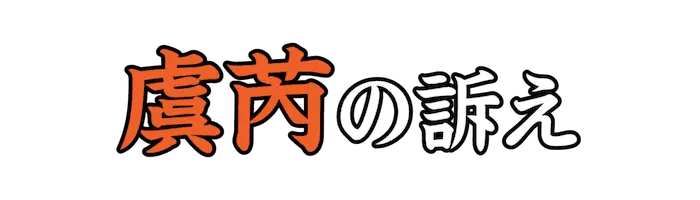 |
ぐぜい |
互いに利益を主張して訴えることや、自己の非を悟り訴えを取り下げることのたとえ。 |
| Lv06_0800 |
|
まなしかたま |
目を細かくかたく編んだ竹かご。上代の舟のひとつといわれる。 |
| Lv06_0801 |
|
やさすがり |
古代の遊戯のひとつ。盤上に線を引き、その線に沿って棋子を動かして勝負を争う。 |
| Lv06_0802 |
 |
のたれば |
刀の刃文のひとつ。波のうねるような曲線のもの。 |
| Lv06_0803 |
|
でくまひくま |
でっぱったところと、くぼんだところ。でこぼこ。 |
| Lv06_0804 |
|
ゆさわり |
人が乗って前後にふり動かす遊び道具。『<鞦韆|ぶらんこ>』とも。 |
| Lv06_0805 |
|
なぎなたあしらい |
なぎなたで相手をあしらうように、適当に応対すること。 |
| Lv06_0806 |
|
がつへん |
漢字の部首、<偏|へん>の一つ。 |
| Lv06_0807 |
|
しょうぶ |
漢字の部首のひとつ。『壯』などの、『爿』で分類した漢字の一群。 |
| Lv06_0808 |
|
かんにょう |
漢字の部首、<繞|にょう>の一つ。 |
| Lv06_0809 |
|
いたつき |
骨折り。苦労。また、病気。 |
| Lv06_0810 |
|
うろくず |
魚などのうろこ。 |
| Lv06_0811 |
|
むらと |
腎臓の古称。転じて、心や心中。 |
| Lv06_0812 |
|
えびら |
矢をさし入れて腰に付ける箱形の容納具。 |
| Lv06_0813 |
|
すむい |
拳遊びで用いる、掛け声のひとつ。四の数の呼び名。 |
| Lv06_0814 |
|
つちぐも |
地上性のクモの総称。ジグモ。 |
| Lv06_0815 |
|
かつお |
スズキ目サバ科の魚。日本では古くから食用にされている。 |
| Lv06_0816 |
|
さより |
ダツ目サヨリ科の魚。沿岸の海面近くに棲息する。 |
| Lv06_0817 |
|
がんがぜ |
ガンガゼ目ガンガゼ科のウニ。長いトゲには激しい痛みを起こす毒をもつ。 |
| Lv06_0818 |
|
せきれい |
スズメ目セキレイ科の鳥。『イワクナギ』『オシエドリ』など、多くの異名を持つ。 |
| Lv06_0819 |
|
のすり |
タカ目タカ科の鳥。平地から山地の森林に棲息する。 |
| Lv06_0820 |
|
につつじ |
ムクロジ目ミカン科の常緑小低木。ミヤマシキミの別名。 |
| Lv06_0821 |
|
しゅんぎく |
キク目キク科の一年草。鍋料理などによく利用される。 |
| Lv06_0822 |
|
にちにちか |
リンドウ目キョウチクトウ科の一年草。ニチニチソウの別名。 |
| Lv06_0823 |
|
しろね |
シソ目シソ科の多年草。池、沼の水辺などの湿地に生育する。 |
| Lv06_0824 |
|
ばんじろう |
フトモモ目フトモモ科の常緑低木。『グァバ』とも。 |
| Lv06_0825 |
|
おにもじゅうしち |
歌舞伎、浄瑠璃の外題。 |
| Lv06_0826 |
|
あんど |
歌舞伎、浄瑠璃の外題。 |
| Lv06_0827 |
 |
もるどば |
東ヨーロッパに位置する共和制国家。首都はキシナウ。 |
| Lv06_0828 |
|
みんだなお |
フィリピン諸島南に位置する島。ルソン島に次いで二番目に大きい。 |
| Lv06_0829 |
|
ぶっしぇる |
ヤード・ポンド法の体積の計量単位。 |
| Lv06_0830 |
|
えーかー |
ヤード・ポンド法の面積の単位。 |
| Lv06_0831 |
|
みみかいつぶり |
カイツブリ目カイツブリ科の鳥。目が赤く、先端が白い嘴が特徴。 |
| Lv06_0832 |
|
ときさかおうむ |
オウム目インコ科の鳥。『<大芭旦|おおばたん>』とも。 |
| Lv06_0833 |
|
げんのしょうこ |
フウロソウ目フウロソウ科の多年草。古来から薬草として利用されている。 |
| Lv06_0834 |
|
にれ |
バラ目ニレ科の樹木の総称。温潤で土地の肥えている所を好む種が多い。 |
| Lv06_0835 |
|
あめちゃづ |
甘露煮にしたアマゴを飯の上にのせ、だし汁などをかけた愛知県の郷土料理。 |
| Lv06_0836 |
|
そうぐま |
日本画で、着色前に主体の周辺の空間を淡く塗り、画面の調子を整えること。 |
| Lv06_0837 |
|
いわかた |
漁網の下側で、<錘綱|いわづな>のついている付近。 |
| Lv06_0838 |
|
しろうねり |
『<百器徒然袋|ひゃっきつれづれぶくろ>』に登場する日本の妖怪。ぼろ布でできた竜のような姿で描かれる。 |
| Lv06_0839 |
|
かわら |
和船の船首から船尾に通す、長く厚い板材。 |
| Lv06_0840 |
 |
うおこおりをいずる |
<七十二候|しちじゅうにこう>のひとつ。２月１４日から２月１８日ごろ。 |
| Lv06_0841 |
|
ひとさしゆび |
親指と中指の間に位置する指。 |
| Lv06_0842 |
|
いがき |
クモが巣を作ること。また、その巣。 |
| Lv06_0843 |
|
といんもうせん |
中国十大銘茶のひとつ。中国の<貴州省|きしゅうしょう>都勻市で産する緑茶。 |
| Lv06_0844 |
|
すうたく |
中国の<浙江省|せっこうしょう>や<上海|しゃんはい>市の長江下流などで、紀元前に存在した新石器時代の文化。 |
| Lv06_0845 |
|
てんこうせい |
『水滸伝』における百八星のうち、上位三十六星の総称。 |
| Lv06_0846 |
|
じょうだん |
むだばなしをして時間をつぶす。さぼる。 |
| Lv06_0847 |
|
くぼくみ |
安く見たり、馬鹿にする。 |
| Lv06_0848 |
|
いわ |
驚きあわてる。驚きいそぐ。 |
| Lv06_0849 |
|
まつろ |
服従する。従う。 |
| Lv06_0850 |
|
もてあそ |
手に持って遊ぶ。手であれこれいじる。また、好き勝手に扱う。 |
| Lv06_0851 |
|
くたかけ |
キジ目キジ科の鳥。ニワトリの古名。 |
| Lv06_0852 |
|
ちどりますおがい |
マルスダレガイ目チドリマスオ科の貝。 |
| Lv06_0853 |
|
みかばち |
ハチ目キバチ科の昆虫。キバチの古名。 |
| Lv06_0854 |
|
まべ |
ウグイスガイ目ウグイスガイ科の貝。真珠を生成するほか、身は食用とされる。 |
| Lv06_0855 |
|
こくぬすと |
コウチュウ目ゴミムシダマシ科の昆虫。穀物等の貯蔵食物に対する害虫。 |
| Lv06_0856 |
 |
かじか |
スズキ目カジカ科の魚の総称。 |
| Lv06_0857 |
|
めぎ |
キンポウゲ目メギ科の落葉低木。樹皮や茎葉は染料に利用される。 |
| Lv06_0858 |
|
かわうすききはだ |
キンポウゲ目メギ科の落葉低木。樹皮や茎葉は染料に利用される。 |
| Lv06_0859 |
|
ひめいたび |
バラ目クワ科常緑のつる性低木。本州以西の暖地の樹幹や岩面に自生する。 |
| Lv06_0860 |
|
しのね |
ナデシコ目タデ科の多年草。ギシギシの古名。 |
| Lv06_0861 |
|
ふだんそう |
ナデシコ目ヒユ科の一年草または二年草。栄養価が高く、緑黄色野菜に分類される。 |
| Lv06_0862 |
 |
かつら |
ヤブニッケイまたはモクセイの古名。 |
| Lv06_0863 |
|
たれにとくおび |
歌舞伎、浄瑠璃の外題。 |
| Lv06_0864 |
|
こっえい |
歌舞伎、浄瑠璃の外題。 |
| Lv06_0865 |
|
ひじきおぼの |
<荒城宮|あらきのみや>と呼ばれる貴人の死体を置くための、仮の宮殿に供えるための食事。 |
| Lv06_0866 |
|
せいころんじん |
中国十大銘茶のひとつ。中国の<浙江省|せっこうしょう>杭州西湖で産する緑茶。 |
| Lv06_0867 |
|
なます |
野菜を細かく切り、調味料であえたもの。 |
| Lv06_0868 |
|
あつかぜいたる |
<七十二候|しちじゅうにこう>のひとつ。７月７日から７月１１日ごろ。 |
| Lv06_0869 |
|
うぐいすなく |
<七十二候|しちじゅうにこう>のひとつ。２月９日から２月１２日ごろ。 |
| Lv06_0870 |
|
たけのこしょうず |
<七十二候|しちじゅうにこう>のひとつ。５月１６日から５月２０日ごろ。 |
| Lv06_0871 |
 |
もみじつたきばむ |
<七十二候|しちじゅうにこう>のひとつ。１１月２日から１１月６日ごろ。 |
| Lv06_0872 |
|
さけのうおむらがる |
<七十二候|しちじゅうにこう>のひとつ。１２月１７日から１２月２１日ごろ。 |
| Lv06_0873 |
|
みみせせ |
耳の後ろにある、少し高くなった部分。耳の付け根。 |
| Lv06_0874 |
|
べいろしゃ |
舌がもつれたり、わけの分からないことをしゃべったりする人。 |
| Lv06_0875 |
|
おんあぼぎゃ |
『<光明真言|こうみょうしんごん>』の最初の部分。病気平癒を祈り魔性を払うときに唱えるとされる。 |
| Lv06_0876 |
|
びるばくしゃ |
仏教における天界の住民、四天王の一人。『<広目天|こうもくてん>』とも。 |
| Lv06_0877 |
|
うぬがで |
自然と。おのずから。 |
| Lv06_0878 |
|
くしたま |
神道における概念で、『<和魂|にぎみたま>』を更に二つに分けたうちの片方。 |
| Lv06_0879 |
|
たかみ |
剣の、手に持つための部分。柄。 |
| Lv06_0880 |
|
ぼは |
よくないこと。よくないもの。転じて、失礼。無礼。 |
| Lv06_0881 |
|
にらきす |
極刑として、人体を塩づけにすること。『<肉醤|ししびしお>』とも。 |
| Lv06_0882 |
|
かくみやだり |
まわりを囲んで宿ること。 |
| Lv06_0883 |
|
とそうあんぎゃ |
難行苦行のために、食物を乞い求めながら僧侶が諸国を歩き回ること。 |
| Lv06_0884 |
|
みかどおがみ |
元日に、天皇が<大極殿|だいごくでん>で臣下たちから年賀を受ける儀式。 |
| Lv06_0885 |
|
かくろく |
物事が互いに似通っていること。 |
| Lv06_0886 |
|
しろめせん |
江戸時代、江戸<深川|ふかがわ><平野新田|ひらのしんでん>の<鋳銭座|ちゅうせんざ>で鋳造された寛永通宝一文銭。 |
| Lv06_0887 |
|
つちぶえ |
土を焼いてつくったふえ。 |
| Lv06_0888 |
|
えおとこ |
いとしい男性のこと。 |
| Lv06_0889 |
|
かいにょ |
<砺波|となみ>平野を主体とする、屋敷林の総称。スギを中心に、ケヤキなどが混植される。 |
| Lv06_0890 |
|
つるべなわ |
釣瓶と呼ばれる、井戸の水をくみ上げるための桶に結びつけてある縄。 |
| Lv06_0891 |
|
あはなち |
田のあぜを切り放して、入れておくべき水を落とすこと。古代、重大な犯罪とされた。 |
| Lv06_0892 |
|
けいぶ |
漢字の部首、構えのひとつ。 |
| Lv06_0893 |
|
ひんほつ |
禅宗で、<住持|じゅうじ>が<払子|ほっす>をとり、<法座|ほうざ>に上って説法すること。 |
| Lv06_0894 |
|
じゅかつ |
貧しくて粗雑な衣服を身に着けていること。 |
| Lv06_0895 |
|
おさ |
外国語を通訳すること。また、その人。 |
| Lv06_0896 |
|
たぶ |
正気を失う。気が狂う。 |
| Lv06_0897 |
|
ひいら |
ひりひりと痛む。ずきずきと痛む。 |
| Lv06_0898 |
|
ひわ |
ひびや割れ目がはいる。割れる。 |
| Lv06_0899 |
|
いのちなが |
長生きである。寿命が長い。 |
| Lv06_0900 |
|
あば |
はげる。崩れる。また、気が緩む。油断する。 |
| Lv06_0901 |
|
たなご |
コイ目コイ科の魚。浅い池や沼などにすむ。 |
| Lv06_0902 |
|
やすでもどき |
エダヒゲムシ目エダヒゲムシ科の虫。世界中に分布する土壌生物。 |
| Lv06_0903 |
|
るいそ |
ネズミ目リス科の動物。ムササビの別名。 |
| Lv06_0904 |
|
いか |
コウイカ目やツツイカ目などの動物の総称。八本の腕と二本の触腕が特徴。 |
| Lv06_0905 |
|
しのりがも |
カモ目カモ科の鳥。雑食で、昆虫や甲殻類、藻類などを食べる。 |
| Lv06_0906 |
|
えびづる |
ブドウ目ブドウ科のつる性落葉低木。実は熟すと黒くなり、食べられる。 |
| Lv06_0907 |
|
ぐんばいなずな |
フウチョウソウ目アブラナ科の一年草。食用や燃料として利用される。 |
| Lv06_0908 |
|
むぐんふぁ |
アオイ目アオイ科の落葉低木。ムクゲの韓国での読み方。 |
| Lv06_0909 |
|
すいか |
ウリ目ウリ科のつる性一年草。夏に球形、楕円形の果実を付ける。 |
| Lv06_0910 |
|
おおえのみ |
シソ目シソ科の一年草。エゴマの別名。 |
| Lv06_0911 |
|
あるぜんちん |
南アメリカ南部に位置する連邦共和制国家。首都はブエノスアイレス。 |
| Lv06_0912 |
|
べりーず |
中央アメリカに位置する立憲君主制国家。首都はベルモパン。 |
| Lv06_0913 |
|
がいあな |
南アメリカ北東部に位置する共和制国家。首都はジョージタウン。 |
| Lv06_0914 |
|
ゆーごすらびあ |
ヨーロッパのバルカン半島地域に存在した、社会主義連邦共和国。 |
| Lv06_0915 |
|
はららご |
産卵する前のサケなどの魚卵を塩漬けにした食品。 |
| Lv06_0916 |
|
ひいほん |
着物の上に着る、羽織に似た外衣。女児の祝い着などにも用いられる。 |
| Lv06_0917 |
|
じんじゅう |
仏語で、禅宗において便所の清掃などをつかさどる役。 |
| Lv06_0918 |
|
つづ |
沈殿する。重いものが沈んでたまる。 |
| Lv06_0919 |
 |
ひじりこ |
どろ。水たまりの土。 |
| Lv06_0920 |
|
よん |
数の名。三の次、五の前の自然数。昔の時刻で、今の午前か午後十時ころ。 |
| Lv06_0921 |
|
さにわ |
古代の神道の祭祀において神託を受け、神意を解釈して伝える者。 |
| Lv06_0922 |
|
しんぼち |
新たに発心して仏道にはいること。また、新たに出家した者。 |
| Lv06_0923 |
|
げんぶ |
漢字の部首のひとつ。『広』などの、『广』で分類した漢字の一群。 |
| Lv06_0924 |
|
せつぶ |
漢字の部首のひとつ。『印』などの、『卩』で分類した漢字の一群。 |
| Lv06_0925 |
|
こんぶ |
漢字の部首のひとつ。『中』などの、『丨』で分類した漢字の一群。 |
| Lv06_0926 |
|
ひょう |
たくさんの馬が走るさまを表す語。 |
| Lv06_0927 |
|
わらしべ |
わらの皮をとり去った芯のこと。 |
| Lv06_0928 |
|
さが |
広げて日に乾す。かき広げる。広げて中身をさらけ出す。 |
| Lv06_0929 |
|
おおそれながら |
『おそれながら』を重々しくいった語。恐れ多いことではございますが。 |
| Lv06_0930 |
|
さが |
兆しや、前触れのこと。特に、吉事のしるし。 |
| Lv06_0931 |
|
とりのふんだまし |
クモ目コガネグモ科のクモ。鳥のフンに擬態しているように見えることから。 |
| Lv06_0932 |
|
いぼだい |
スズキ目イボダイ科の魚。徳島県北部では郷土料理の『ぼうぜの姿寿司』がある。 |
| Lv06_0933 |
|
かのにけぐさ |
セリ目ウコギ科の多年草。生薬として古くから利用されてきた。 |
| Lv06_0934 |
|
ななこ |
先端が小さい<鏨|たがね>を打ちこみ、金属の表面に細かい粒が置かれたようにみせる彫金技法。 |
| Lv06_0935 |
|
ふんひん |
波が石に激しく打ち当たる、大きな音。 |
| Lv06_0936 |
|
あいたんどころ |
<大内裏|だいだいり><太政官|だいじょうかん>正庁の北東<隅|すみ>にあった殿舎。参議以上の者が会食や政務を行なった。 |
| Lv06_0937 |
|
こゆるぎのいそ |
神奈川県大磯付近一帯の海岸。 |
| Lv06_0938 |
|
ゆはつしゃめん |
<陝西|せんせい>省<咸陽|かんよう>市周辺でのビャンビャン麺の呼称。 |
| Lv06_0939 |
|
おぼとれがしら |
髪の毛の乱れた頭のこと。『<蓬頭|ほうとう>』とも。 |
| Lv06_0940 |
|
もしかあんにゃ |
新潟県で、次男をさしていう語。『もしも長兄が亡くなったら兄になる者』の意。 |
| Lv06_0941 |
|
さんしょううお |
サンショウウオ目サンショウウオ科の動物。サンショウの香りがする種がいることから。 |
| Lv06_0942 |
|
さんとどみんご |
ドミニカ共和国の首都。カリブ海最大級の都市圏を形成する。 |
| Lv06_0943 |
|
はなのこのごろ |
歌舞伎、浄瑠璃の外題。 |
| Lv06_0944 |
|
うのはなくたし |
陰暦四月中旬ごろの長雨が、卯の花を腐らすこと。転じて、五月雨に先立って降る長雨。 |
| Lv06_0945 |
|
くせものがたり |
近世後期の小説。著者は<上田|うえだ><秋成|あきなり>。社会風俗や医者にまつわる風刺が記される。 |
| Lv06_0946 |
|
たでいたいすい |
仏語で、泥水にまみれ苦しむ人を救うため、慈悲で自らも泥水にまみれ救うこと。 |
| Lv06_0947 |
|
おおきみのかみ |
律令制における、<正親司|おおきみのつかさ>の長官。<正六位上|しょうろくいのじょう>相当の官。 |
| Lv06_0948 |
|
とつかのつるぎ |
日本神話に登場する、架空の武器のひとつ。また、『長剣』を指す一般名詞とも。 |
| Lv06_0949 |
|
えびのはたふね |
<大嘗祭|だいじょうさい>や<新嘗祭|しんじょうさい>で、天皇が手を洗われる器。両端にエビの鰭のような手のついた土器。 |
| Lv06_0950 |
|
よろこ |
うれしいと思う。楽しく快い気持ちになる。 |
| Lv06_0951 |
|
しめ |
スズメ目アトリ科の小鳥。平地などの樹林や雑木林に生息する大型のヒワ。 |
| Lv06_0952 |
|
おおましこ |
スズメ目アトリ科の小鳥。平地などの林、林縁の草地、農耕地などに棲息する。 |
| Lv06_0953 |
|
ふくろう |
フクロウ目フクロウ科の鳥。暗闇の中でもよく見えるよう眼球が大きく発達している。 |
| Lv06_0954 |
|
えとぴりか |
チドリ目ウミスズメ科の鳥。橙色の大きなくちばしをもつ。 |
| Lv06_0955 |
|
ひばり |
スズメ目ヒバリ科の鳥。春の鳥として知られる。 |
| Lv06_0956 |
|
とび |
タカ目タカ科の鳥。日本ではもっとも身近な猛禽類とされる。 |
| Lv06_0957 |
|
にわくなぶり |
スズメ目セキレイ科の鳥。セキレイの古名。 |
| Lv06_0958 |
|
ひよどり |
スズメ目ヒヨドリ科の鳥。富山県砺波市の市の鳥に指定されている。 |
| Lv06_0959 |
|
さばひい |
ネズミギス目サバヒー科の魚。主に台湾の食用魚として養殖されている。 |
| Lv06_0960 |
|
うとう |
チドリ目ウミスズメ科の鳥。北太平洋沿岸に広く分布する。 |
| Lv06_0961 |
 |
じょうびたき |
スズメ目ヒタキ科の小鳥。冬鳥で、積雪のない地方で越冬する。 |
| Lv06_0962 |
|
しめ |
スズメ目アトリ科の小鳥。平地などの樹林や雑木林に生息する大型のヒワ。 |
| Lv06_0963 |
|
やまどり |
キジ目キジ科の鳥。日本の固有種で、山地に棲息することに由来する。 |
| Lv06_0964 |
|
せきれい |
スズメ目セキレイ科の鳥。『イワクナギ』『オシエドリ』など、多くの異名を持つ。 |
| Lv06_0965 |
 |
つぶじらみ |
カジリムシ目ケジラミ科の昆虫。ケジラミの異名。 |
| Lv06_0966 |
|
めなだ |
ボラ目ボラ科の魚。出世魚の一種。 |
| Lv06_0967 |
|
うんか |
カメムシ目ヨコバイ亜目の昆虫。イネを食い荒らす害虫。 |
| Lv06_0968 |
|
かじかがえる |
無尾目アオガエル科の動物。美しい声で鳴き、和歌の題材となっている。 |
| Lv06_0969 |
|
きさご |
原始腹足目ニシキウズガイ科の巻貝。潮間帯下の砂底に棲息する。 |
| Lv06_0970 |
|
こめつきむし |
コウチュウ目コメツキムシ科の昆虫。幼虫は『ハリガネムシ』と呼ばれる。 |
| Lv06_0971 |
|
ひばかり |
トカゲ目ナミヘビ科のヘビ。『噛まれたら命がその日ばかり』に由来するとされる。 |
| Lv06_0972 |
|
あとり |
スズメ目アトリ科の鳥。山麓の森林や農耕地に棲息する。 |
| Lv06_0973 |
|
かけす |
スズメ目カラス科の鳥。雑食で、木の実や小鳥の雛などを食べる。 |
| Lv06_0974 |
|
しとど |
スズメ目ホオジロ科ホオジロ属の鳥のうち、いくつかの種に対して付けられた古名。 |
| Lv06_0975 |
|
つみ |
タカ目タカ科の鳥。日本で確認できるタカ類では最小。 |
| Lv06_0976 |
|
きんこ |
ナマコ目キンコ科の棘皮動物。寒い地方の沿岸浅海に住む。 |
| Lv06_0977 |
|
ひら |
ニシン目ニシン科の魚。熱帯、亜熱帯海域に分布する。 |
| Lv06_0978 |
|
かせ |
ウニの別名。また、その殻を指す。 |
| Lv06_0979 |
|
かくぶつ |
スズキ目カジカ科の魚。アユカケ、カマキリ[(魚)]の別名。 |
| Lv06_0980 |
|
ちょう |
チョウ目チョウ科の動物。キンギョやコイなどの皮膚に寄生する。 |
| Lv06_0981 |
|
いぼたろうむし |
カメムシ目カタカイガラムシ科の昆虫。イボタロウカタカイガラムシの俗称。 |
| Lv06_0982 |
|
よめな |
キク目キク科の多年草。道端で見かける野菊の一種。 |
| Lv06_0983 |
|
はばやまぼくち |
キク目キク科の多年草。福島県以南の本州や四国などに分布する。 |
| Lv06_0984 |
|
そよご |
ニシキギ目モチノキ科の常緑小高木。庭木としてしばしば使用される。 |
| Lv06_0985 |
|
なべな |
マツムシソウ目マツムシソウ科の越年草。山地の渓谷沿いなどに生える。 |
| Lv06_0986 |
|
とべら |
セリ目トベラ科の常緑低木。暖地の海岸に多く自生する。 |
| Lv06_0987 |
|
ささげ |
マメ目マメ科の一年草。アフリカ原産。 |
| Lv06_0988 |
|
とくさ |
トクサ目トクサ科の多年草。『<歯磨草|ハミガキクサ>』とも。 |
| Lv06_0989 |
|
おもと |
キジカクシ目スズラン亜科の常緑多年草。古典園芸植物のひとつ。 |
| Lv06_0990 |
|
はらん |
キジカクシ目キジカクシ科の多年草。和食に飾る人造バランの元とされる。 |
| Lv06_0991 |
|
まくり |
イギス目フジマツモ科の紅藻の一種。暖流流域に分布する。 |
| Lv06_0992 |
|
たぬきも |
シソ目タヌキモ科の多年草および一年草。食虫植物のひとつ。 |
| Lv06_0993 |
|
かりやす |
イネ目イネ科の多年草。各地の山野に群生する。 |
| Lv06_0994 |
|
ふしのき |
ムクロジ目ウルシ科の落葉小高木。ヌルデの別名。 |
| Lv06_0995 |
 |
のぼたん |
フトモモ目ノボタン科の常緑低木。暖地に自生し、また観賞用に栽培もする。 |
| Lv06_0996 |
|
もっこく |
ツツジ目モッコク科の常緑高木。病虫害に強く、公園樹や庭木に利用される。 |
| Lv06_0997 |
|
あさつき |
キジカクシ目ヒガンバナ科の多年草。ラッキョウのような鱗茎を持つ。 |
| Lv06_0998 |
 |
あさがら |
ツツジ目エゴノキ科の落葉小高木。箸やマッチの軸木などに利用される。 |
| Lv06_0999 |
|
うばゆり |
ユリ目ユリ科の多年草。山地の森林に多く自生する。 |
| Lv06_1000 |
|
いおすき |
ナデシコ目ヤマゴボウ科の多年草。ヤマゴボウの古名。 |
| Lv06_1001 |
|
とちかがみ |
オモダカ目トチカガミ科の多年草。本州から南西諸島にかけて分布する。 |
| Lv06_1002 |
|
はなずおう |
マメ目マメ科の落葉低木。『<蘇芳花|スオウバナ>』とも。 |
| Lv06_1003 |
|
いのこずち |
ナデシコ目ヒユ科の多年草。根を乾燥させて漢方薬などに使われる。 |
| Lv06_1004 |
|
やつがしら |
サトイモの一品種。親芋を中心に小芋がたくさんできて大きな塊となる。 |
| Lv06_1005 |
|
ほんだわら |
ヒバマタ目のホンダワラ科の海藻。古くから肥料、飾り物として用いられた。 |
| Lv06_1006 |
|
はなわらび |
ハナヤスリ目ハナヤスリ科のシダ植物。肥大成長をすることがある。 |
| Lv06_1007 |
|
ひきよもぎ |
シソ目ハマウツボ科の半寄生植物。薬用として利用される。 |
| Lv06_1008 |
|
いささぐさ |
マメ目マメ科の一年草。ソラマメの別名。 |
| Lv06_1009 |
|
きらんそう |
シソ目シソ科の多年草。道端などに生える。 |
| Lv06_1010 |
|
あまどころ |
キジカクシ目キジカクシ科の多年草。根茎の見た目がトコロに似る。 |
| Lv06_1011 |
|
ありどおし |
アカネ目アカネ科の常緑低木。関西地方では正月の縁起物とされる。 |
| Lv06_1012 |
|
みずあおい |
ツユクサ目ミズアオイ科の一年草。淡水に生える抽水植物。 |
| Lv06_1013 |
|
つくねいも |
ヤマノイモ目ヤマノイモ科の多年草。『ナガイモ』とも。 |
| Lv06_1014 |
|
かわらけな |
キク目キク科の二年草。タビラコの別称。 |
| Lv06_1015 |
|
たがやさん |
マメ目マメ科の広葉樹。木材は、主に装飾的な用途に用いられる。 |
| Lv06_1016 |
|
さぼんそう |
ナデシコ目ナデシコ科の多年草。『サポナリア』とも。 |
| Lv06_1017 |
|
つるにんじん |
キキョウ目キキョウ科の多年草。韓国では代表的な山菜。 |
| Lv06_1018 |
|
なんきんはぜ |
キントラノオ目トウダイグサ科の落葉高木。公園や庭、道沿いなどで見られる。 |
| Lv06_1019 |
|
しらいとそう |
ユリ目シュロソウ科の多年草。糸屑を束ねたような花の形が特徴。 |
| Lv06_1020 |
|
いたびかずら |
バラ目クワ科の常緑低木。暖地にみられ、岩を登るようにして生える。 |
| Lv06_1021 |
|
いつまでぐさ |
ユキノシタ目ベンケイソウ科の多年草。マンネングサの別名。 |
| Lv06_1022 |
|
みつばうつぎ |
ムクロジ目ミツバウツギ科の落葉低木。若葉はゆでて山菜として食用にされる。 |
| Lv06_1023 |
|
はんげしょう |
コショウ目ドクダミ科の多年草。水辺や湿地に生える。 |
| Lv06_1024 |
|
どうだんつつじ |
ツツジ目ツツジ科の常緑低木。『<満天星|まんてんせい>』とも。 |
| Lv06_1025 |
 |
とうまるかご |
江戸時代の罪人護送用の駕籠。 |
| Lv06_1026 |
|
いさば |
魚商や運搬に用いられてきた和船。また、魚問屋や魚の仲買人。 |
| Lv06_1027 |
|
まぶし |
蚕を入れて繭を作らせる竹のかご。 |
| Lv06_1028 |
|
はゆまうまや |
駅馬の継ぎ立てをする宿駅。 |
| Lv06_1029 |
|
すぼし |
<二十八宿|にじゅうはっしゅく>のひとつ。東方青龍七宿の第一宿。 |
| Lv06_1030 |
|
あみぼし |
<二十八宿|にじゅうはっしゅく>のひとつ。東方青龍七宿の第二宿。 |
| Lv06_1031 |
|
ともぼし |
<二十八宿|にじゅうはっしゅく>のひとつ。東方青龍七宿の第三宿。 |
| Lv06_1032 |
|
そいぼし |
<二十八宿|にじゅうはっしゅく>のひとつ。東方青龍七宿の第四宿。 |
| Lv06_1033 |
|
なかごぼし |
<二十八宿|にじゅうはっしゅく>のひとつ。東方青龍七宿の第五宿。 |
| Lv06_1034 |
|
あしたれぼし |
<二十八宿|にじゅうはっしゅく>のひとつ。東方青龍七宿の第六宿。 |
| Lv06_1035 |
|
みぼし |
<二十八宿|にじゅうはっしゅく>のひとつ。東方青龍七宿の第七宿。 |
| Lv06_1036 |
|
ひきつぼし |
<二十八宿|にじゅうはっしゅく>のひとつ。北方玄武七宿の第一宿。 |
| Lv06_1037 |
|
いなみぼし |
<二十八宿|にじゅうはっしゅく>のひとつ。北方玄武七宿の第二宿。 |
| Lv06_1038 |
|
うるきぼし |
<二十八宿|にじゅうはっしゅく>のひとつ。北方玄武七宿の第三宿。 |
| Lv06_1039 |
|
とみてぼし |
<二十八宿|にじゅうはっしゅく>のひとつ。北方玄武七宿の第四宿。 |
| Lv06_1040 |
|
うみやめぼし |
<二十八宿|にじゅうはっしゅく>のひとつ。北方玄武七宿の第五宿。 |
| Lv06_1041 |
|
はついぼし |
<二十八宿|にじゅうはっしゅく>のひとつ。北方玄武七宿の第六宿。 |
| Lv06_1042 |
|
なまめぼし |
<二十八宿|にじゅうはっしゅく>のひとつ。北方玄武七宿の第七宿。 |
| Lv06_1043 |
|
とかきぼし |
<二十八宿|にじゅうはっしゅく>のひとつ。西方白虎七宿の第一宿。 |
| Lv06_1044 |
|
たたらぼし |
<二十八宿|にじゅうはっしゅく>のひとつ。西方白虎七宿の第二宿。 |
| Lv06_1045 |
|
えきえぼし |
<二十八宿|にじゅうはっしゅく>のひとつ。西方白虎七宿の第三宿。 |
| Lv06_1046 |
|
むつらぼし |
<二十八宿|にじゅうはっしゅく>のひとつ。<昴|すばる>の別称。 |
| Lv06_1047 |
|
あめふりぼし |
<二十八宿|にじゅうはっしゅく>のひとつ。西方白虎七宿の第五宿。 |
| Lv06_1048 |
|
とろきぼし |
<二十八宿|にじゅうはっしゅく>のひとつ。西方白虎七宿の第六宿。 |
| Lv06_1049 |
|
からすきぼし |
<二十八宿|にじゅうはっしゅく>のひとつ。西方白虎七宿の第七宿。 |
| Lv06_1050 |
|
ちちりぼし |
<二十八宿|にじゅうはっしゅく>のひとつ。南方朱雀七宿の第一宿。 |
| Lv06_1051 |
 |
たまおのぼし |
<二十八宿|にじゅうはっしゅく>のひとつ。南方朱雀七宿の第二宿。 |
| Lv06_1052 |
|
ぬりこぼし |
<二十八宿|にじゅうはっしゅく>のひとつ。南方朱雀七宿の第三宿。 |
| Lv06_1053 |
 |
ほとおりぼし |
<二十八宿|にじゅうはっしゅく>のひとつ。南方朱雀七宿の第四宿。 |
| Lv06_1054 |
|
ちりこぼし |
<二十八宿|にじゅうはっしゅく>のひとつ。南方朱雀七宿の第五宿。 |
| Lv06_1055 |
|
たすきぼし |
<二十八宿|にじゅうはっしゅく>のひとつ。南方朱雀七宿の第六宿。 |
| Lv06_1056 |
|
みつかけぼし |
<二十八宿|にじゅうはっしゅく>のひとつ。南方朱雀七宿の第七宿。 |
| Lv06_1057 |
|
ぬなと |
玉の音。玉のすれ合う音。 |
| Lv06_1058 |
|
かなつがり |
鉄製の鎖のこと。 |
| Lv06_1059 |
|
はたたがみ |
激しい雷。へきれき。 |
| Lv06_1060 |
|
ものまさ |
死人の着る衣服で弔問者に会う人。死者に代わり祭を受ける人。 |
| Lv06_1061 |
|
よりまし |
呪術において、神霊をその場限りで宿らせるための子供、または人形。 |
| Lv06_1062 |
|
おちみず |
月の不死信仰に関わる霊薬のひとつ。飲めば若返るといわれる。 |
| Lv06_1063 |
|
さもあらばあれ |
不本意ながら容認する気持ちを表わす語。どうともなるがよい。ままよ。 |
| Lv06_1064 |
|
はらや |
水銀にミョウバンを加えて製したもの。 |
| Lv06_1065 |
|
まじち |
持つ人が貧しくなるように呪われた釣針。 |
| Lv06_1066 |
|
たける |
古代、その地方に威を振るっていた、勇猛な種族の長。 |
| Lv06_1067 |
|
さはり |
銅、スズ、鉛の合金。また、それで作った碗形の器や鍋、仏具。 |
| Lv06_1068 |
|
しゃくみ |
能面のひとつ。中年の女を表わす女面。 |
| Lv06_1069 |
|
はらのふえ |
古代、戦場でくだのふえと一緒に用いた、獣の角に似た形の笛。 |
| Lv06_1070 |
|
しかのみならず |
そればかりでなく。その上に。かてて加えて。 |
| Lv06_1071 |
|
そばえ |
日が照っているのに雨が降ること。また、その雨。天気雨。 |
| Lv06_1072 |
|
わざおぎ |
こっけいな動作をして歌い舞い、神や人を慰め楽しませること。 |
| Lv06_1073 |
|
ちぎり |
竿に棒を通し、二人で担って量る<秤|はかり>。 |
| Lv06_1074 |
|
あかぼうふら |
ユスリカ類の幼虫。アカムシ。 |
| Lv06_1075 |
|
りんごまいまい |
有肺目マイマイ科のカタツムリ。現在では、特にフランス料理の食材となる。 |
| Lv06_1076 |
|
つちはんみょう |
ツチハンミョウ科の甲虫の総称。体内に毒をもち、触れると炎症を起こす。 |
| Lv06_1077 |
|
せんちこがね |
コウチュウ目センチコガネ科の昆虫。幼虫、成虫ともに糞や腐肉を餌とする。 |
| Lv06_1078 |
|
たこのまくら |
タコノマクラ目タコノマクラ科の生物。浅い礫質の海底に生息する。 |
| Lv06_1079 |
|
いるか |
クジラ目のうち、小形のハクジラ類の総称。『マイルカ』『バンドウイルカ』など。 |
| Lv06_1080 |
|
いちはつ |
キジカクシ目アヤメ科の多年草。中国原産。 |
| Lv06_1081 |
|
さいかち |
マメ目マメ科の落葉高木。幹に特徴的な棘がある。 |
| Lv06_1082 |
|
まんさく |
ユキノシタ目マンサク科の落葉小高木。日本各地の山地、山林に生える。 |
| Lv06_1083 |
|
らいらっく |
モクセイ目モクセイ科の高木落葉樹。『<紫丁香花|ムラサキハシドイ>』とも。 |
| Lv06_1084 |
|
かたばみ |
カタバミ目カタバミ科の多年草。春から秋にかけ黄色の花を咲かせる。 |
| Lv06_1085 |
|
あせび |
ツツジ目ツツジ科の常緑低木。観賞用に植栽もされる場合もある。 |
| Lv06_1086 |
|
えにしだ |
マメ目マメ科の植物の総称。 |
| Lv06_1087 |
|
あおさ |
アオサ目アオサ科の緑藻の総称。一部の緑藻は食用として利用される。 |
| Lv06_1088 |
|
えびね |
ラン目ラン科の多年草。鉢栽培、庭園植栽用に販売される。 |
| Lv06_1089 |
|
かなむぐら |
バラ目アサ科の一年草。茎葉と花は薬草になるとされる。 |
| Lv06_1090 |
|
きぶし |
クロッソソマ目キブシ科の落葉低木。庭木や花材などに使われる。 |
| Lv06_1091 |
|
きぶし |
クロッソソマ目キブシ科の落葉低木。庭木や花材などに使われる。 |
| Lv06_1092 |
|
ぎぼうし |
キジカクシ目キジカクシ科の多年草。食用とされる。 |
| Lv06_1093 |
|
しおで |
ユリ目サルトリイバラ科の多年草。原野や山林に生える。 |
| Lv06_1094 |
|
じゃのひげ |
キジカクシ目キジカクシ科の多年草。植え込みなどに用いられる。 |
| Lv06_1095 |
|
ゆきのした |
ユキノシタ目ユキノシタ科の多年草。山地の湿った場所に生育する。 |
| Lv06_1096 |
|
ゆきのした |
ユキノシタ目ユキノシタ科の多年草。山地の湿った場所に生育する。 |
| Lv06_1097 |
|
ゆすらうめ |
バラ目バラ科の落葉低木。庭園などに植えられる。 |
| Lv06_1098 |
|
みず |
バラ目イラクサ科の一年草、多年草。水気の多い森林などに自生する。 |
| Lv06_1099 |
|
ほかい |
食物を入れて持ち運ぶ、木製でふた付きの容器。 |
| Lv06_1100 |
|
ますら |
正しく未来を予言するうらない。まちがいなく言い当てるうらない。 |
| Lv06_1101 |
 |
わたまし |
貴人の転居、神輿の渡御を敬っていう語。 |
| Lv06_1102 |
|
とらでん |
雅楽の曲名で、壱越調の大曲。 |
| Lv06_1103 |
|
きなか |
一文の半分。半文。 |
| Lv06_1104 |
|
すだま |
山林の異気から生ずるという怪物。顔は人間、体は獣の姿をしているとされる。 |
| Lv06_1105 |
|
みずは |
川や木石の精霊。姿かたちは幼児に似ているとされる。 |
| Lv06_1106 |
|
たずき |
手がかり。よるべき手段。 |
| Lv06_1107 |
|
うねめ |
昔、宮中で天皇や皇后の食事の世話などをした女官。 |
| Lv06_1108 |
|
わろうだ |
わらなどを縄にない、渦巻き状に編んで作ったまるい敷物。 |
| Lv06_1109 |
 |
ますかがみ |
鏡をほめていう語。立派な鏡。まそかがみ。 |
| Lv06_1110 |
|
めりかり |
音声に抑揚をつけること。めりはり。 |
| Lv06_1111 |
|
もこし |
仏堂、仏塔などの軒下壁面に取り付けたひさし状の構造物。 |
| Lv06_1112 |
|
ぬたりのき |
大化新政当時の朝廷が、蝦夷に設けた城柵。 |
| Lv06_1113 |
|
しはに |
地の底にある土。 |
| Lv06_1114 |
 |
へこおび |
男子または子供用の、長い着物の裾をあげるための帯。 |
| Lv06_1115 |
|
もころお |
自分と同等の男。自分に匹敵する相手。 |
| Lv06_1116 |
|
このこうべ |
かしらとなる人。主に、力仕事にあたる力者のかしらを指す。 |
| Lv06_1117 |
|
みてぐら |
神に奉納する物の総称。 |
| Lv06_1118 |
|
たくひれ |
コウゾなどの繊維で織った、たくぬので作ったひれ。 |
| Lv06_1119 |
|
みよし |
船の先端の波を切る部分。へさき。 |
| Lv06_1120 |
|
かきべ |
律令制以前における豪族の私有民。 |
| Lv06_1121 |
|
すいさん |
仏語で、食事のとき、少量を別の器に取り分けて、衆生に施すこと。 |
| Lv06_1122 |
 |
おきゅうと |
福岡県の郷土料理。エゴノリを煮て、薄く平らまたは板状に固めた寒天状のもの。 |
| Lv06_1123 |
|
おぎむし |
シャクガ科の幼虫であるシャクトリムシの古名。 |
| Lv06_1124 |
|
おひょう |
カレイ目カレイ科の魚。ヒラメに似るが、大型のカレイの一種。 |
| Lv06_1125 |
|
おおかわ |
能楽や<長唄|ながうた>などで、<囃子|はやし>に使う大きな<鼓|つづみ>。 |
| Lv06_1126 |
 |
およそか |
あでやかで美しいさま。うるわしいさま。 |
| Lv06_1127 |
|
ういぐる |
四世紀から十三世紀にかけてモンゴル高原などで活躍した、トルコ系の民族。 |
| Lv06_1128 |
|
きりのう |
能で、一日の番組の最後に演じる能のこと。 |
| Lv06_1129 |
|
けろいど |
傷、やけどなどを受けた皮膚のあとの組織が隆起したもの。 |
| Lv06_1130 |
|
じゃいな |
紀元前六世紀ころ、マハービーラにより開かれたインドの宗教。 |
| Lv06_1131 |
|
さるか |
スズメ目ムクドリ科の鳥。キュウカンチョウの別名。 |
| Lv06_1132 |
|
しゃこがい |
マルスダレガイ目ザルガイ科の貝。太平洋中西部やインド洋に棲息する。 |
| Lv06_1133 |
|
まだに |
ダニ目マダニ科の虫。哺乳類などに寄生し吸血をする。 |
| Lv06_1134 |
|
さふらん |
キジカクシ目アヤメ科の多年草。また、めしべを乾燥させ作った香辛料。 |
| Lv06_1135 |
|
あすぱらがす |
キジカクシ目キジカクシ科の多年草。若い茎を食用とする。 |
| Lv06_1136 |
|
たーさい |
アブラナ目アブラナ科の一年草。中国原産で、葉を食用とする。 |
| Lv06_1137 |
|
はしりどころ |
ナス目ナス科の多年草。球根がトコロに似るが、強い毒性がある。 |
| Lv06_1138 |
|
し |
数の単位のひとつ。『<|じょ>』とも。『<垓|がい>』の次で、１０の２４乗を指す。 |
| Lv06_1139 |
|
ぬめかわ |
牛や馬などの皮をタンニンで柔らかくした、弾力をもった革。鞄や靴などに用いる。 |
| Lv06_1140 |
|
たかたぬき |
タカ狩りで、タカを腕にとまらせるときに使用する革製の手袋。 |
| Lv06_1141 |
|
あきょう |
生薬のひとつ。動物の皮や骨を煮たにかわから作る。 |
| Lv06_1142 |
|
おうぎ |
生薬のひとつ。イワオウギ属などの地下茎から作る。 |
| Lv06_1143 |
|
ぼくそく |
生薬のひとつ。クヌギやコナラなどの樹皮から作る。 |
| Lv06_1144 |
|
けほがい |
猟師が狩猟のあとに山の神をまつること。また、その祭り。 |
| Lv06_1145 |
|
ちきりじめ |
木や石材同士をつなぐ際、合わせ目にはめてつなぎ合わせるためのもの。 |
| Lv06_1146 |
|
とっぱい |
兜にある鉢の頂がとがったもの。 |
| Lv06_1147 |
|
し |
からだの器官の感覚や機能がなくなる。 |
| Lv06_1148 |
|
とざし |
草が生い茂り、道や入り口を閉ざすこと。 |
| Lv06_1149 |
|
げっしてきく |
無理やり折り合いをつけたり、強引に物事を行ったりすること。 |
| Lv06_1150 |
|
こてきりょうだ |
英雄同士が戦うこと。 |
| Lv06_1151 |
|
おおあるまじろ |
被甲目オオアルマジロ属の動物。体毛が変化した鱗状の板で覆われている。 |
| Lv06_1152 |
|
くまほえざる |
サル目アテリダエ科の動物。 |
| Lv06_1153 |
|
むささび |
ネズミ目リス科の動物。日本の固有種。 |
| Lv06_1154 |
|
さる |
サル目の動物の総称。生物学的にはヒトも含まれるとされる。 |
| Lv06_1155 |
|
あかむつ |
スズキ目ホタルジャコ科の魚。『ノドグロ』とも。 |
| Lv06_1156 |
|
らふてー |
皮付きの三枚肉またはもも肉を醤油などで味付けした、沖縄県の郷土料理。 |
| Lv06_1157 |
|
みみがー |
沖縄で、豚から取った耳介の呼び方。酢の物にしたり、塩をつけて食べられる。 |
| Lv06_1158 |
|
ちらがー |
沖縄で、豚の顔から取った皮の呼び方。加工され、食材として利用される。 |
| Lv06_1159 |
|
うさんみ |
沖縄の御願行事において、先祖の墓や仏壇にお供えする重箱料理。 |
| Lv06_1160 |
|
ざんこうしょうふく |
人がいた後に残る香り。また、すぐれた人物や詩、文章のこと。 |


{kind=link}
{kind=link}
{kind=link}
{kind=link}
{kind=link}
{kind=link}
{kind=link}
{kind=link}
{kind=link}
{kind=link}
{kind=link}
{kind=link}
{kind=link}
{kind=link}

{kind=link}
{kind=link}
{kind=link}
{kind=link}
{kind=link}
{kind=link}
{kind=link}
{kind=link}
{kind=link}
{kind=link}
{kind=link}
{kind=link}
{kind=link}
{kind=link}
{kind=link}
{kind=link}
{kind=link}
{kind=link}
{kind=link}
{kind=link}
{kind=link}
{kind=link}
{kind=link}
{kind=link}
{kind=link}
{kind=link}
{kind=link}
{kind=link}
{kind=link}
{kind=link}
{kind=link}
{kind=link}
{kind=link}
{kind=link}
{kind=link}
{kind=link}
{kind=link}
{kind=link}
{kind=link}
{kind=link}
{kind=link}
{kind=link}
{kind=link}
{kind=link}
{kind=link}
{kind=link}
{kind=link}
{kind=link}
{kind=link}
{kind=link}
{kind=link}
{kind=link}
{kind=link}
{kind=link}
{kind=link}
{kind=link}
{kind=link}
{kind=link}
{kind=link}
{kind=link}
{kind=link}
{kind=link}

{kind=link}
{kind=link}
{kind=link}
{kind=link}
{kind=link}
{kind=link}
{kind=link}
{kind=link}
{kind=link}
{kind=link}
{kind=link}
{kind=link}
{kind=link}
{kind=link}
{kind=link}
{kind=link}
{kind=link}
{kind=link}
{kind=link}
{kind=link}
{kind=link}
{kind=link}
{kind=link}
{kind=link}
{kind=link}
{kind=link}
{kind=link}
{kind=link}
{kind=link}
{kind=link}
{kind=link}
{kind=link}
{kind=link}
{kind=link}
{kind=link}
{kind=link}
{kind=link}
{kind=link}
{kind=link}
{kind=link}
{kind=link}
{kind=link}

{kind=link}
{kind=link}
{kind=link}
{kind=link}
{kind=link}
{kind=link}
{kind=link}
{kind=link}
{kind=link}
{kind=link}
{kind=link}
{kind=link}
{kind=link}
{kind=link}
{kind=link}
{kind=link}
{kind=link}
{kind=link}
{kind=link}
{kind=link}
{kind=link}
{kind=link}
{kind=link}
{kind=link}
{kind=link}
{kind=link}
{kind=link}
{kind=link}
{kind=link}
{kind=link}
{kind=link}
{kind=link}
{kind=link}
{kind=link}
{kind=link}
{kind=link}
{kind=link}
{kind=link}
{kind=link}
{kind=link}
{kind=link}
{kind=link}
{kind=link}
{kind=link}
{kind=link}
{kind=link}
{kind=link}
{kind=link}
{kind=link}

{kind=link}

{kind=link}
{kind=link}
{kind=link}
{kind=link}
{kind=link}
{kind=link}
{kind=link}
{kind=link}
{kind=link}
{kind=link}
{kind=link}

{kind=link}
{kind=link}
{kind=link}
{kind=link}
{kind=link}
{kind=link}
{kind=link}
{kind=link}
{kind=link}
{kind=link}
{kind=link}
{kind=link}
{kind=link}

{kind=link}
{kind=link}
{kind=link}
{kind=link}
{kind=link}
{kind=link}
{kind=link}
{kind=link}
{kind=link}
{kind=link}
{kind=link}
{kind=link}
{kind=link}
{kind=link}
{kind=link}
{kind=link}
{kind=link}
{kind=link}
{kind=link}
{kind=link}
{kind=link}
{kind=link}
{kind=link}
{kind=link}
{kind=link}
{kind=link}
{kind=link}
{kind=link}
{kind=link}
{kind=link}
{kind=link}
{kind=link}
{kind=link}
{kind=link}
{kind=link}
{kind=link}
{kind=link}
{kind=link}
{kind=link}
{kind=link}

{kind=link}
{kind=link}
{kind=link}
{kind=link}
{kind=link}
{kind=link}
{kind=link}
{kind=link}
{kind=link}
{kind=link}
{kind=link}
{kind=link}
{kind=link}
{kind=link}
{kind=link}

{kind=link}
{kind=link}
{kind=link}
{kind=link}
{kind=link}
{kind=link}
{kind=link}
{kind=link}
{kind=link}
{kind=link}

{kind=link}
{kind=link}
{kind=link}
{kind=link}
{kind=link}
{kind=link}
{kind=link}
{kind=link}
{kind=link}
{kind=link}
{kind=link}
{kind=link}
{kind=link}
{kind=link}
{kind=link}
{kind=link}
{kind=link}
{kind=link}
{kind=link}
{kind=link}
{kind=link}
{kind=link}
{kind=link}
{kind=link}
{kind=link}
{kind=link}
{kind=link}


{kind=link}
{kind=link}
{kind=link}
{kind=link}
{kind=link}
{kind=link}
{kind=link}
{kind=link}
{kind=link}
{kind=link}
{kind=link}
{kind=link}
{kind=link}
{kind=link}
{kind=link}
{kind=link}
{kind=link}
{kind=link}
{kind=link}
{kind=link}
{kind=link}
{kind=link}
{kind=link}
{kind=link}
{kind=link}
{kind=link}
{kind=link}
{kind=link}
{kind=link}
{kind=link}
{kind=link}
{kind=link}
{kind=link}
{kind=link}
{kind=link}
{kind=link}
{kind=link}

{kind=link}
{kind=link}


{kind=link}
{kind=link}
{kind=link}
{kind=link}
{kind=link}
{kind=link}
{kind=link}
{kind=link}
{kind=link}
{kind=link}
{kind=link}
{kind=link}
{kind=link}
{kind=link}
{kind=link}
{kind=link}

{kind=link}
{kind=link}
{kind=link}
{kind=link}
{kind=link}
{kind=link}
{kind=link}
{kind=link}
{kind=link}
{kind=link}
{kind=link}
{kind=link}
{kind=link}
{kind=link}
{kind=link}
{kind=link}
{kind=link}
{kind=link}
{kind=link}
{kind=link}
{kind=link}
{kind=link}
{kind=link}
{kind=link}
{kind=link}
{kind=link}
{kind=link}
{kind=link}
{kind=link}
{kind=link}
{kind=link}
{kind=link}
{kind=link}
{kind=link}
{kind=link}
{kind=link}
{kind=link}
{kind=link}
{kind=link}
{kind=link}
{kind=link}
{kind=link}
{kind=link}
{kind=link}
{kind=link}
{kind=link}

{kind=link}
{kind=link}
{kind=link}
{kind=link}
{kind=link}
{kind=link}
{kind=link}
{kind=link}
{kind=link}
{kind=link}
{kind=link}
{kind=link}
{kind=link}
{kind=link}
{kind=link}
{kind=link}
{kind=link}
{kind=link}
{kind=link}
{kind=link}
{kind=link}
{kind=link}
{kind=link}
{kind=link}

{kind=link}
{kind=link}
{kind=link}
{kind=link}
{kind=link}
{kind=link}
{kind=link}
{kind=link}
{kind=link}
{kind=link}
{kind=link}
{kind=link}

{kind=link}
{kind=link}
{kind=link}
{kind=link}
{kind=link}
{kind=link}
{kind=link}
{kind=link}
{kind=link}
{kind=link}
{kind=link}
{kind=link}
{kind=link}
{kind=link}
{kind=link}

{kind=link}
{kind=link}
{kind=link}
{kind=link}
{kind=link}

{kind=link}
{kind=link}
{kind=link}
{kind=link}
{kind=link}
{kind=link}
{kind=link}
{kind=link}

{kind=link}
{kind=link}
{kind=link}
{kind=link}
{kind=link}
{kind=link}
{kind=link}
{kind=link}
{kind=link}
{kind=link}
{kind=link}
{kind=link}
{kind=link}
{kind=link}
{kind=link}
{kind=link}
{kind=link}
{kind=link}
{kind=link}
{kind=link}
{kind=link}
{kind=link}
{kind=link}
{kind=link}
{kind=link}
{kind=link}
{kind=link}
{kind=link}
{kind=link}
{kind=link}
{kind=link}
{kind=link}
{kind=link}
{kind=link}
{kind=link}
{kind=link}
{kind=link}
{kind=link}
{kind=link}
{kind=link}
{kind=link}
{kind=link}
{kind=link}
{kind=link}
{kind=link}
{kind=link}
{kind=link}

{kind=link}
{kind=link}
{kind=link}
{kind=link}
{kind=link}
{kind=link}
{kind=link}
{kind=link}
{kind=link}
{kind=link}
{kind=link}
{kind=link}
{kind=link}
{kind=link}
{kind=link}
{kind=link}
{kind=link}
{kind=link}
{kind=link}
{kind=link}
{kind=link}
{kind=link}
{kind=link}
{kind=link}
{kind=link}
{kind=link}
{kind=link}
{kind=link}
{kind=link}
{kind=link}
{kind=link}
{kind=link}
{kind=link}
{kind=link}
{kind=link}
{kind=link}
{kind=link}
{kind=link}
{kind=link}
{kind=link}
{kind=link}

{kind=link}
{kind=link}
{kind=link}

{kind=link}
{kind=link}
{kind=link}
{kind=link}
{kind=link}
{kind=link}
{kind=link}
{kind=link}
{kind=link}
{kind=link}
{kind=link}
{kind=link}
{kind=link}
{kind=link}
{kind=link}
{kind=link}
{kind=link}
{kind=link}
{kind=link}
{kind=link}
{kind=link}
{kind=link}
{kind=link}
{kind=link}
{kind=link}
{kind=link}
{kind=link}
{kind=link}
{kind=link}

{kind=link}
{kind=link}

{kind=link}
{kind=link}
{kind=link}
{kind=link}
{kind=link}
{kind=link}
{kind=link}
{kind=link}
{kind=link}
{kind=link}
{kind=link}
{kind=link}
{kind=link}
{kind=link}
{kind=link}
{kind=link}
{kind=link}
{kind=link}
{kind=link}
{kind=link}
{kind=link}
{kind=link}
{kind=link}
{kind=link}
{kind=link}
{kind=link}

{kind=link}
{kind=link}
{kind=link}
{kind=link}
{kind=link}
{kind=link}
{kind=link}
{kind=link}
{kind=link}
{kind=link}
{kind=link}
{kind=link}
{kind=link}
{kind=link}
{kind=link}
{kind=link}
{kind=link}
{kind=link}
{kind=link}
{kind=link}
{kind=link}
{kind=link}
{kind=link}
{kind=link}
{kind=link}

{kind=link}

{kind=link}
{kind=link}
{kind=link}
{kind=link}
{kind=link}
{kind=link}
{kind=link}
{kind=link}
{kind=link}
{kind=link}
{kind=link}
{kind=link}
{kind=link}
{kind=link}
{kind=link}
{kind=link}
{kind=link}
{kind=link}
{kind=link}
{kind=link}
{kind=link}
{kind=link}
{kind=link}
{kind=link}
{kind=link}
{kind=link}
{kind=link}
{kind=link}
{kind=link}
{kind=link}
{kind=link}
{kind=link}
{kind=link}
{kind=link}
{kind=link}
{kind=link}
{kind=link}
{kind=link}
{kind=link}
{kind=link}
{kind=link}
{kind=link}
{kind=link}
{kind=link}
{kind=link}
{kind=link}
{kind=link}

{kind=link}
{kind=link}
{kind=link}
{kind=link}
{kind=link}
{kind=link}
{kind=link}

{kind=link}
{kind=link}
{kind=link}
{kind=link}

{kind=link}
{kind=link}
{kind=link}
{kind=link}
{kind=link}
{kind=link}
{kind=link}

{kind=link}
{kind=link}
{kind=link}

{kind=link}
{kind=link}
{kind=link}
{kind=link}
{kind=link}
{kind=link}
{kind=link}
{kind=link}
{kind=link}
{kind=link}
{kind=link}
{kind=link}
{kind=link}
{kind=link}
{kind=link}
{kind=link}
{kind=link}
{kind=link}
{kind=link}
{kind=link}
{kind=link}
{kind=link}
{kind=link}
{kind=link}
{kind=link}
{kind=link}
{kind=link}
{kind=link}
{kind=link}
{kind=link}
{kind=link}
{kind=link}
{kind=link}
{kind=link}